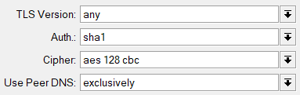

В логах выдаёт вот это:
[июл. 31, 2023, 12:07:33] ----- OpenVPN Start -----
[июл. 31, 2023, 12:07:33] EVENT: CORE_THREAD_ACTIVE
[июл. 31, 2023, 12:07:33] OpenVPN core 3.git::081bfebe:RelWithDebInfo android arm64 64-bit PT_PROXY
[июл. 31, 2023, 12:07:33] Frame=512/2048/512 mssfix-ctrl=1250
[июл. 31, 2023, 12:07:33] UNUSED OPTIONS
0 [nobind]
7 [data-ciphers] [AES-128-GCM:AES-256-GCM:AES-128-CBC]
8 [resolv-retry] [infinite]
9 [persist-key]
10 [persist-tun]
[июл. 31, 2023, 12:07:33] EVENT: RESOLVE
[июл. 31, 2023, 12:07:33] Contacting 51.75.75.245:1194 via TCPv4
[июл. 31, 2023, 12:07:33] EVENT: WAIT
[июл. 31, 2023, 12:07:33] Connecting to [vpn.antizapret.prostovpn.org]:1194 (51.75.75.245) via TCPv4
[июл. 31, 2023, 12:07:33] EVENT: CONNECTING
[июл. 31, 2023, 12:07:33] Tunnel Options:V4,dev-type tun,link-mtu 1559,tun-mtu 1500,proto TCPv4_CLIENT,cipher AES-128-CBC,auth SHA1,keysize 128,key-method 2,tls-client
[июл. 31, 2023, 12:07:33] Creds: UsernameEmpty/PasswordEmpty
[июл. 31, 2023, 12:07:33] Peer Info:
IV_VER=3.git::081bfebe:RelWithDebInfo
IV_PLAT=android
IV_NCP=2
IV_TCPNL=1
IV_PROTO=30
IV_CIPHERS=AES-256-GCM:AES-128-GCM:CHACHA20-POLY1305:AES-128-CBC
IV_AUTO_SESS=1
IV_GUI_VER=net.openvpn.connect.android_3.3.4-9290
IV_SSO=webauth,openurl,crtext
[июл. 31, 2023, 12:07:33] VERIFY OK: depth=1, /CN=AntiZapret CA2, signature: RSA-SHA256
[июл. 31, 2023, 12:07:33] VERIFY OK: depth=0, /CN=antizapret-server-shared, signature: RSA-SHA256
[июл. 31, 2023, 12:07:34] SSL Handshake: peer certificate: CN=antizapret-server-shared, 2048 bit RSA, cipher: ECDHE-RSA-AES256-GCM-SHA384 TLSv1.2 Kx=ECDH Au=RSA Enc=AESGCM(256) Mac=AEAD
[июл. 31, 2023, 12:07:34] Session is ACTIVE
[июл. 31, 2023, 12:07:34] Sending PUSH_REQUEST to server...
[июл. 31, 2023, 12:07:34] EVENT: GET_CONFIG
[июл. 31, 2023, 12:07:34] OPTIONS:
0 [route] [192.168.104.1] [255.255.255.255]
1 [route] [10.224.0.0] [255.254.0.0]
2 [dhcp-option] [DNS] [192.168.104.1]
3 [block-outside-dns]
4 [route-gateway] [192.168.112.1]
5 [topology] [subnet]
6 [ping] [110]
7 [ping-restart] [360]
8 [route] [103.246.200.0] [255.255.252.0]
9 [route] [178.239.88.0] [255.255.248.0]
10 [route] [185.104.45.0] [255.255.255.0]
11 [route] [193.105.213.36] [255.255.255.252]
12 [route] [203.104.128.0] [255.255.240.0]
13 [route] [203.104.144.0] [255.255.248.0]
14 [route] [203.104.152.0] [255.255.252.0]
15 [route] [68.171.224.0] [255.255.224.0]
16 [route] [74.82.64.0] [255.255.224.0]
17 [ifconfig] [192.168.115.34] [255.255.248.0]
18 [peer-id] [0]
19 [cipher] [AES-128-GCM]
[июл. 31, 2023, 12:07:34] PROTOCOL OPTIONS:
cipher: AES-128-GCM
digest: NONE
key-derivation: OpenVPN PRF
compress: NONE
peer ID: 0
[июл. 31, 2023, 12:07:34] EVENT: ASSIGN_IP
[июл. 31, 2023, 12:07:34] Connected via tun
[июл. 31, 2023, 12:07:34] EVENT: CONNECTED info='vpn.antizapret.prostovpn.org:1194 (51.75.75.245) via /TCPv4 on tun/192.168.115.34/ gw=[192.168.112.1/]'
[июл. 31, 2023, 12:07:34] TCP recv error: Connection reset by peer
[июл. 31, 2023, 12:07:34] Transport Error: Transport error on 'vpn.antizapret.prostovpn.org: NETWORK_RECV_ERROR
[июл. 31, 2023, 12:07:34] Client terminated, restarting in 5000 ms...
[июл. 31, 2023, 12:07:34] EVENT: TRANSPORT_ERROR info='Transport error on 'vpn.antizapret.prostovpn.org: NETWORK_RECV_ERROR' trans=TO_DISCONNECTED
[июл. 31, 2023, 12:07:34] EVENT: CANCELLED
[июл. 31, 2023, 12:07:34] EVENT: DISCONNECTED
[июл. 31, 2023, 12:07:34] Tunnel bytes per CPU second: 0
[июл. 31, 2023, 12:07:34] ----- OpenVPN Stop -----
[июл. 31, 2023, 12:07:34] EVENT: CORE_THREAD_DONE
Подтверждаю, сегодня не работает в OpenVPN, OnePlus 7 Pro, Android 13
Тоже перестал работать.
На мобильном интернете от МТС не запускается, на домашнем интернете Ростелеком запускается.
Redmi Note 10 Pro MIUI 14.0.2.0 TKFIDXM (Android 13)
Лог
[июл. 31, 2023, 12:59:31] OpenVPN core 3.git::081bfebe:RelWithDebInfo android arm64 64-bit PT_PROXY
[июл. 31, 2023, 12:59:31] ----- OpenVPN Start -----
[июл. 31, 2023, 12:59:31] EVENT: CORE_THREAD_ACTIVE
[июл. 31, 2023, 12:59:31] Frame=512/2048/512 mssfix-ctrl=1250
[июл. 31, 2023, 12:59:31] UNUSED OPTIONS
0 [nobind]
7 [data-ciphers] [AES-128-GCM:AES-256-GCM:AES-128-CBC]
8 [resolv-retry] [infinite]
9 [persist-key]
10 [persist-tun]
[июл. 31, 2023, 12:59:31] EVENT: RESOLVE
[июл. 31, 2023, 12:59:31] Contacting 51.158.181.161:1194 via TCPv4
[июл. 31, 2023, 12:59:31] EVENT: WAIT
[июл. 31, 2023, 12:59:31] Connecting to [vpn.antizapret.prostovpn.org]:1194 (51.158.181.161) via TCPv4
[июл. 31, 2023, 12:59:31] EVENT: CONNECTING
[июл. 31, 2023, 12:59:31] Tunnel Options:V4,dev-type tun,link-mtu 1559,tun-mtu 1500,proto TCPv4_CLIENT,cipher AES-128-CBC,auth SHA1,keysize 128,key-method 2,tls-client
[июл. 31, 2023, 12:59:31] Creds: UsernameEmpty/PasswordEmpty
[июл. 31, 2023, 12:59:31] Peer Info:
IV_VER=3.git::081bfebe:RelWithDebInfo
IV_PLAT=android
IV_NCP=2
IV_TCPNL=1
IV_PROTO=30
IV_CIPHERS=AES-256-GCM:AES-128-GCM:CHACHA20-POLY1305:AES-128-CBC
IV_AUTO_SESS=1
IV_GUI_VER=net.openvpn.connect.android_3.3.4-9290
IV_SSO=webauth,openurl,crtext
[июл. 31, 2023, 12:59:31] VERIFY OK: depth=1, /CN=AntiZapret CA2, signature: RSA-SHA256
[июл. 31, 2023, 12:59:31] VERIFY OK: depth=0, /CN=antizapret-server-shared, signature: RSA-SHA256
[июл. 31, 2023, 12:59:31] SSL Handshake: peer certificate: CN=antizapret-server-shared, 2048 bit RSA, cipher: ECDHE-RSA-AES256-GCM-SHA384 TLSv1.2 Kx=ECDH Au=RSA Enc=AESGCM(256) Mac=AEAD
[июл. 31, 2023, 12:59:31] Session is ACTIVE
[июл. 31, 2023, 12:59:31] Sending PUSH_REQUEST to server…
[июл. 31, 2023, 12:59:31] EVENT: GET_CONFIG
[июл. 31, 2023, 12:59:32] OPTIONS:
0 [route] [192.168.104.1] [255.255.255.255]
1 [route] [10.224.0.0] [255.254.0.0]
2 [dhcp-option] [DNS] [192.168.104.1]
3 [block-outside-dns]
4 [route-gateway] [192.168.112.1]
5 [topology] [subnet]
6 [ping] [110]
7 [ping-restart] [360]
8 [route] [103.246.200.0] [255.255.252.0]
9 [route] [178.239.88.0] [255.255.248.0]
10 [route] [185.104.45.0] [255.255.255.0]
11 [route] [193.105.213.36] [255.255.255.252]
12 [route] [203.104.128.0] [255.255.240.0]
13 [route] [203.104.144.0] [255.255.248.0]
14 [route] [203.104.152.0] [255.255.252.0]
15 [route] [68.171.224.0] [255.255.224.0]
16 [route] [74.82.64.0] [255.255.224.0]
17 [ifconfig] [192.168.115.147] [255.255.248.0]
18 [peer-id] [0]
19 [cipher] [AES-128-GCM]
[июл. 31, 2023, 12:59:32] PROTOCOL OPTIONS:
cipher: AES-128-GCM
digest: NONE
key-derivation: OpenVPN PRF
compress: NONE
peer ID: 0
[июл. 31, 2023, 12:59:32] EVENT: ASSIGN_IP
[июл. 31, 2023, 12:59:32] Connected via tun
[июл. 31, 2023, 12:59:32] EVENT: CONNECTED info=‘vpn.antizapret.prostovpn.org:1194 (51.158.181.161) via /TCPv4 on tun/192.168.115.147/ gw=[192.168.112.1/]’
[июл. 31, 2023, 12:59:32] TCP recv error: Connection reset by peer
[июл. 31, 2023, 12:59:32] Transport Error: Transport error on 'vpn.antizapret.prostovpn.org: NETWORK_RECV_ERROR
[июл. 31, 2023, 12:59:32] EVENT: TRANSPORT_ERROR info='Transport error on ‘vpn.antizapret.prostovpn.org: NETWORK_RECV_ERROR’ trans=TO_DISCONNECTED
[июл. 31, 2023, 12:59:32] Client terminated, restarting in 5000 ms…
[июл. 31, 2023, 12:59:37] EVENT: RECONNECTING
[июл. 31, 2023, 12:59:37] EVENT: RESOLVE
[июл. 31, 2023, 12:59:37] Contacting 51.75.75.245:1194 via TCPv4
[июл. 31, 2023, 12:59:37] EVENT: WAIT
[июл. 31, 2023, 12:59:39] Connecting to [vpn.antizapret.prostovpn.org]:1194 (51.75.75.245) via TCPv4
[июл. 31, 2023, 12:59:40] EVENT: CONNECTING
[июл. 31, 2023, 12:59:40] Tunnel Options:V4,dev-type tun,link-mtu 1559,tun-mtu 1500,proto TCPv4_CLIENT,cipher AES-128-CBC,auth SHA1,keysize 128,key-method 2,tls-client
[июл. 31, 2023, 12:59:40] Creds: UsernameEmpty/PasswordEmpty
[июл. 31, 2023, 12:59:40] Peer Info:
IV_VER=3.git::081bfebe:RelWithDebInfo
IV_PLAT=android
IV_NCP=2
IV_TCPNL=1
IV_PROTO=30
IV_CIPHERS=AES-256-GCM:AES-128-GCM:CHACHA20-POLY1305:AES-128-CBC
IV_AUTO_SESS=1
IV_GUI_VER=net.openvpn.connect.android_3.3.4-9290
IV_SSO=webauth,openurl,crtext
[июл. 31, 2023, 12:59:41] VERIFY OK: depth=1, /CN=AntiZapret CA2, signature: RSA-SHA256
[июл. 31, 2023, 12:59:41] VERIFY OK: depth=0, /CN=antizapret-server-shared, signature: RSA-SHA256
[июл. 31, 2023, 12:59:42] SSL Handshake: peer certificate: CN=antizapret-server-shared, 2048 bit RSA, cipher: ECDHE-RSA-AES256-GCM-SHA384 TLSv1.2 Kx=ECDH Au=RSA Enc=AESGCM(256) Mac=AEAD
[июл. 31, 2023, 12:59:42] Session is ACTIVE
[июл. 31, 2023, 12:59:42] Sending PUSH_REQUEST to server…
[июл. 31, 2023, 12:59:42] EVENT: GET_CONFIG
[июл. 31, 2023, 12:59:43] Sending PUSH_REQUEST to server…
[июл. 31, 2023, 12:59:44] OPTIONS:
0 [route] [10.224.0.0] [255.254.0.0]
1 [dhcp-option] [DNS] [192.168.104.1]
2 [block-outside-dns]
3 [route-gateway] [192.168.104.1]
4 [topology] [subnet]
5 [ping] [110]
6 [ping-restart] [360]
7 [route] [103.246.200.0] [255.255.252.0]
8 [route] [178.239.88.0] [255.255.248.0]
9 [route] [185.104.45.0] [255.255.255.0]
10 [route] [193.105.213.36] [255.255.255.252]
11 [route] [203.104.128.0] [255.255.240.0]
12 [route] [203.104.144.0] [255.255.248.0]
13 [route] [203.104.152.0] [255.255.252.0]
14 [route] [68.171.224.0] [255.255.224.0]
15 [route] [74.82.64.0] [255.255.224.0]
16 [ifconfig] [192.168.104.193] [255.255.248.0]
17 [peer-id] [0]
18 [cipher] [AES-128-GCM]
[июл. 31, 2023, 12:59:44] PROTOCOL OPTIONS:
cipher: AES-128-GCM
digest: NONE
key-derivation: OpenVPN PRF
compress: NONE
peer ID: 0
[июл. 31, 2023, 12:59:44] EVENT: ASSIGN_IP
[июл. 31, 2023, 12:59:44] Connected via tun
[июл. 31, 2023, 12:59:44] EVENT: CONNECTED info=‘vpn.antizapret.prostovpn.org:1194 (51.75.75.245) via /TCPv4 on tun/192.168.104.193/ gw=[192.168.104.1/]’
[июл. 31, 2023, 12:59:44] TCP recv error: Connection reset by peer
[июл. 31, 2023, 12:59:44] Transport Error: Transport error on 'vpn.antizapret.prostovpn.org: NETWORK_RECV_ERROR
[июл. 31, 2023, 12:59:44] EVENT: TRANSPORT_ERROR info='Transport error on ‘vpn.antizapret.prostovpn.org: NETWORK_RECV_ERROR’ trans=TO_DISCONNECTED
[июл. 31, 2023, 12:59:44] Client terminated, restarting in 5000 ms…
[июл. 31, 2023, 12:59:47] EVENT: CANCELLED
[июл. 31, 2023, 12:59:47] EVENT: DISCONNECTED
[июл. 31, 2023, 12:59:47] Tunnel bytes per CPU second: 0
[июл. 31, 2023, 12:59:47] ----- OpenVPN Stop -----
[июл. 31, 2023, 12:59:47] EVENT: CORE_THREAD_DONE
Мегафон Москва, тоже не работает. Подключается, и тут же разрыв связи.
У меня также! Подключается, как только подключился - отключается. И так весь день. Pixel 6
Сейчас подключилось. Если опять будут проблемы - напишу.
Опять не подключается
Проверил дома на WiFi от ТТК - работает. На мобильной связи - нет. Второй день уже проблема есть.
[авг. 01, 2023, 07:12:21] OpenVPN core 3.git::081bfebe:RelWithDebInfo android arm64 64-bit PT_PROXY
[авг. 01, 2023, 07:12:21] ----- OpenVPN Start -----
[авг. 01, 2023, 07:12:21] EVENT: CORE_THREAD_ACTIVE
[авг. 01, 2023, 07:12:21] Frame=512/2048/512 mssfix-ctrl=1250
[авг. 01, 2023, 07:12:21] UNUSED OPTIONS
0 [nobind]
7 [data-ciphers] [AES-128-GCM:AES-256-GCM:AES-128-CBC]
8 [resolv-retry] [infinite]
9 [persist-key]
10 [persist-tun]
[авг. 01, 2023, 07:12:21] EVENT: RESOLVE
[авг. 01, 2023, 07:12:21] Contacting 51.158.181.161:1194 via TCPv4
[авг. 01, 2023, 07:12:21] EVENT: WAIT
[авг. 01, 2023, 07:12:21] Connecting to [vpn.antizapret.prostovpn.org]:1194 (51.158.181.161) via TCPv4
[авг. 01, 2023, 07:12:21] EVENT: CONNECTING
[авг. 01, 2023, 07:12:21] Tunnel Options:V4,dev-type tun,link-mtu 1559,tun-mtu 1500,proto TCPv4_CLIENT,cipher AES-128-CBC,auth SHA1,keysize 128,key-method 2,tls-client
[авг. 01, 2023, 07:12:21] Creds: UsernameEmpty/PasswordEmpty
[авг. 01, 2023, 07:12:21] Peer Info:
IV_VER=3.git::081bfebe:RelWithDebInfo
IV_PLAT=android
IV_NCP=2
IV_TCPNL=1
IV_PROTO=30
IV_CIPHERS=AES-256-GCM:AES-128-GCM:CHACHA20-POLY1305:AES-128-CBC
IV_AUTO_SESS=1
IV_GUI_VER=net.openvpn.connect.android_3.3.4-9290
IV_SSO=webauth,openurl,crtext
[авг. 01, 2023, 07:12:22] VERIFY OK: depth=1, /CN=AntiZapret CA2, signature: RSA-SHA256
[авг. 01, 2023, 07:12:22] VERIFY OK: depth=0, /CN=antizapret-server-shared, signature: RSA-SHA256
[авг. 01, 2023, 07:12:22] SSL Handshake: peer certificate: CN=antizapret-server-shared, 2048 bit RSA, cipher: ECDHE-RSA-AES256-GCM-SHA384 TLSv1.2 Kx=ECDH Au=RSA Enc=AESGCM(256) Mac=AEAD
[авг. 01, 2023, 07:12:22] Session is ACTIVE
[авг. 01, 2023, 07:12:22] Sending PUSH_REQUEST to server...
[авг. 01, 2023, 07:12:22] EVENT: GET_CONFIG
[авг. 01, 2023, 07:12:22] OPTIONS:
0 [route] [192.168.104.1] [255.255.255.255]
1 [route] [10.224.0.0] [255.254.0.0]
2 [dhcp-option] [DNS] [192.168.104.1]
3 [block-outside-dns]
4 [route-gateway] [192.168.112.1]
5 [topology] [subnet]
6 [ping] [110]
7 [ping-restart] [360]
8 [route] [103.246.200.0] [255.255.252.0]
9 [route] [178.239.88.0] [255.255.248.0]
10 [route] [185.104.45.0] [255.255.255.0]
11 [route] [193.105.213.36] [255.255.255.252]
12 [route] [203.104.128.0] [255.255.240.0]
13 [route] [203.104.144.0] [255.255.248.0]
14 [route] [203.104.152.0] [255.255.252.0]
15 [route] [68.171.224.0] [255.255.224.0]
16 [route] [74.82.64.0] [255.255.224.0]
17 [ifconfig] [192.168.112.219] [255.255.248.0]
18 [peer-id] [0]
19 [cipher] [AES-128-GCM]
[авг. 01, 2023, 07:12:22] PROTOCOL OPTIONS:
cipher: AES-128-GCM
digest: NONE
key-derivation: OpenVPN PRF
compress: NONE
peer ID: 0
[авг. 01, 2023, 07:12:22] EVENT: ASSIGN_IP
[авг. 01, 2023, 07:12:22] Connected via tun
[авг. 01, 2023, 07:12:22] EVENT: CONNECTED info='vpn.antizapret.prostovpn.org:1194 (51.158.181.161) via /TCPv4 on tun/192.168.112.219/ gw=[192.168.112.1/]'
[авг. 01, 2023, 07:12:22] TCP recv error: Connection reset by peer
[авг. 01, 2023, 07:12:22] Transport Error: Transport error on 'vpn.antizapret.prostovpn.org: NETWORK_RECV_ERROR
[авг. 01, 2023, 07:12:22] EVENT: TRANSPORT_ERROR info='Transport error on 'vpn.antizapret.prostovpn.org: NETWORK_RECV_ERROR' trans=TO_DISCONNECTED
[авг. 01, 2023, 07:12:22] Client terminated, restarting in 5000 ms...
[авг. 01, 2023, 07:12:27] EVENT: RECONNECTING
[авг. 01, 2023, 07:12:27] EVENT: RESOLVE
[авг. 01, 2023, 07:12:27] Contacting 51.158.181.161:1194 via TCPv4
[авг. 01, 2023, 07:12:27] EVENT: WAIT
[авг. 01, 2023, 07:12:27] Connecting to [vpn.antizapret.prostovpn.org]:1194 (51.158.181.161) via TCPv4
[авг. 01, 2023, 07:12:28] EVENT: CONNECTING
[авг. 01, 2023, 07:12:28] Tunnel Options:V4,dev-type tun,link-mtu 1559,tun-mtu 1500,proto TCPv4_CLIENT,cipher AES-128-CBC,auth SHA1,keysize 128,key-method 2,tls-client
[авг. 01, 2023, 07:12:28] Creds: UsernameEmpty/PasswordEmpty
[авг. 01, 2023, 07:12:28] Peer Info:
IV_VER=3.git::081bfebe:RelWithDebInfo
IV_PLAT=android
IV_NCP=2
IV_TCPNL=1
IV_PROTO=30
IV_CIPHERS=AES-256-GCM:AES-128-GCM:CHACHA20-POLY1305:AES-128-CBC
IV_AUTO_SESS=1
IV_GUI_VER=net.openvpn.connect.android_3.3.4-9290
IV_SSO=webauth,openurl,crtext
[авг. 01, 2023, 07:12:28] VERIFY OK: depth=1, /CN=AntiZapret CA2, signature: RSA-SHA256
[авг. 01, 2023, 07:12:28] VERIFY OK: depth=0, /CN=antizapret-server-shared, signature: RSA-SHA256
[авг. 01, 2023, 07:12:28] SSL Handshake: peer certificate: CN=antizapret-server-shared, 2048 bit RSA, cipher: ECDHE-RSA-AES256-GCM-SHA384 TLSv1.2 Kx=ECDH Au=RSA Enc=AESGCM(256) Mac=AEAD
[авг. 01, 2023, 07:12:28] Session is ACTIVE
[авг. 01, 2023, 07:12:28] Sending PUSH_REQUEST to server...
[авг. 01, 2023, 07:12:28] EVENT: GET_CONFIG
[авг. 01, 2023, 07:12:29] OPTIONS:
0 [route] [192.168.104.1] [255.255.255.255]
1 [route] [10.224.0.0] [255.254.0.0]
2 [dhcp-option] [DNS] [192.168.104.1]
3 [block-outside-dns]
4 [route-gateway] [192.168.112.1]
5 [topology] [subnet]
6 [ping] [110]
7 [ping-restart] [360]
8 [route] [103.246.200.0] [255.255.252.0]
9 [route] [178.239.88.0] [255.255.248.0]
10 [route] [185.104.45.0] [255.255.255.0]
11 [route] [193.105.213.36] [255.255.255.252]
12 [route] [203.104.128.0] [255.255.240.0]
13 [route] [203.104.144.0] [255.255.248.0]
14 [route] [203.104.152.0] [255.255.252.0]
15 [route] [68.171.224.0] [255.255.224.0]
16 [route] [74.82.64.0] [255.255.224.0]
17 [ifconfig] [192.168.114.38] [255.255.248.0]
18 [peer-id] [0]
19 [cipher] [AES-128-GCM]
[авг. 01, 2023, 07:12:29] PROTOCOL OPTIONS:
cipher: AES-128-GCM
digest: NONE
key-derivation: OpenVPN PRF
compress: NONE
peer ID: 0
[авг. 01, 2023, 07:12:29] EVENT: ASSIGN_IP
[авг. 01, 2023, 07:12:29] Connected via tun
[авг. 01, 2023, 07:12:29] EVENT: CONNECTED info='vpn.antizapret.prostovpn.org:1194 (51.158.181.161) via /TCPv4 on tun/192.168.114.38/ gw=[192.168.112.1/]'
[авг. 01, 2023, 07:12:29] TCP recv error: Connection reset by peer
[авг. 01, 2023, 07:12:29] Transport Error: Transport error on 'vpn.antizapret.prostovpn.org: NETWORK_RECV_ERROR
[авг. 01, 2023, 07:12:29] EVENT: TRANSPORT_ERROR info='Transport error on 'vpn.antizapret.prostovpn.org: NETWORK_RECV_ERROR' trans=TO_DISCONNECTED
[авг. 01, 2023, 07:12:29] Client terminated, restarting in 5000 ms...
Тоже сегодня отказывается работать. Мтс.
2023-08-01 11:05:38 official build 0.7.43 running on google Pixel 6a (bluejay), Android 13 (TQ3A.230605.010) API 33, ABI arm64-v8a, (google/bluejay/bluejay:13/TQ3A.230605.010/10121037:user/release-keys)
2023-08-01 11:05:38 Building configuration…
2023-08-01 11:05:38 Fetched VPN profile (antizapret-tcp) triggered by main profile list
2023-08-01 11:05:38 started Socket Thread
2023-08-01 11:05:38 Network Status: CONNECTED LTE to MOBILE internet.mts.ru
2023-08-01 11:05:38 Debug state info: CONNECTED LTE to MOBILE internet.mts.ru, pause: userPause, shouldbeconnected: true, network: SHOULDBECONNECTED
2023-08-01 11:05:38 P:WARNING: linker: Warning: "/data/app/~~jHFvfzFP-tyOLDAsF_I1CA==/de.blinkt.openvpn-TEqeLV5qXYj3tJ4hrsqA9g==/lib/arm64/libovpnexec.so" is not a directory (ignoring)
2023-08-01 11:05:38 Debug state info: CONNECTED LTE to MOBILE internet.mts.ru, pause: userPause, shouldbeconnected: true, network: SHOULDBECONNECTED
2023-08-01 11:05:38 Current Parameter Settings:
2023-08-01 11:05:38 Waiting 0s seconds between connection attempt
2023-08-01 11:05:38 config = 'stdin'
2023-08-01 11:05:38 mode = 0
2023-08-01 11:05:38 show_ciphers = DISABLED
2023-08-01 11:05:38 show_digests = DISABLED
2023-08-01 11:05:38 show_engines = DISABLED
2023-08-01 11:05:38 genkey = DISABLED
2023-08-01 11:05:38 genkey_filename = '[UNDEF]'
2023-08-01 11:05:38 key_pass_file = '[UNDEF]'
2023-08-01 11:05:38 show_tls_ciphers = DISABLED
2023-08-01 11:05:38 connect_retry_max = 0
2023-08-01 11:05:38 Connection profiles [0]:
2023-08-01 11:05:38 proto = tcp-client
2023-08-01 11:05:38 local = '[UNDEF]'
2023-08-01 11:05:38 local_port = '[UNDEF]'
2023-08-01 11:05:38 remote = 'vpn.antizapret.prostovpn.org'
2023-08-01 11:05:38 remote_port = '1194'
2023-08-01 11:05:38 remote_float = DISABLED
2023-08-01 11:05:38 bind_defined = DISABLED
2023-08-01 11:05:38 bind_local = DISABLED
2023-08-01 11:05:38 bind_ipv6_only = DISABLED
2023-08-01 11:05:38 connect_retry_seconds = 2
2023-08-01 11:05:38 connect_timeout = 120
2023-08-01 11:05:38 socks_proxy_server = '[UNDEF]'
2023-08-01 11:05:38 socks_proxy_port = '[UNDEF]'
2023-08-01 11:05:38 tun_mtu = 1500
2023-08-01 11:05:38 tun_mtu_defined = ENABLED
2023-08-01 11:05:38 link_mtu = 1500
2023-08-01 11:05:38 link_mtu_defined = DISABLED
2023-08-01 11:05:38 tun_mtu_extra = 0
2023-08-01 11:05:38 tun_mtu_extra_defined = DISABLED
2023-08-01 11:05:38 tls_mtu = 1250
2023-08-01 11:05:38 mtu_discover_type = -1
2023-08-01 11:05:38 fragment = 0
2023-08-01 11:05:38 mssfix = 1492
2023-08-01 11:05:38 mssfix_encap = ENABLED
2023-08-01 11:05:38 mssfix_fixed = DISABLED
2023-08-01 11:05:38 explicit_exit_notification = 0
2023-08-01 11:05:38 tls_auth_file = '[UNDEF]'
2023-08-01 11:05:38 key_direction = not set
2023-08-01 11:05:38 tls_crypt_file = '[UNDEF]'
2023-08-01 11:05:38 tls_crypt_v2_file = '[UNDEF]'
2023-08-01 11:05:38 Connection profiles END
2023-08-01 11:05:38 remote_random = DISABLED
2023-08-01 11:05:38 ipchange = '[UNDEF]'
2023-08-01 11:05:38 dev = 'tun'
2023-08-01 11:05:38 dev_type = '[UNDEF]'
2023-08-01 11:05:38 dev_node = '[UNDEF]'
2023-08-01 11:05:38 lladdr = '[UNDEF]'
2023-08-01 11:05:38 topology = 1
2023-08-01 11:05:38 ifconfig_local = '[UNDEF]'
2023-08-01 11:05:38 ifconfig_remote_netmask = '[UNDEF]'
2023-08-01 11:05:38 ifconfig_noexec = DISABLED
2023-08-01 11:05:38 ifconfig_nowarn = ENABLED
2023-08-01 11:05:38 ifconfig_ipv6_local = '[UNDEF]'
2023-08-01 11:05:38 ifconfig_ipv6_netbits = 0
2023-08-01 11:05:38 ifconfig_ipv6_remote = '[UNDEF]'
2023-08-01 11:05:38 shaper = 0
2023-08-01 11:05:38 mtu_test = 0
2023-08-01 11:05:38 mlock = DISABLED
2023-08-01 11:05:38 keepalive_ping = 0
2023-08-01 11:05:38 keepalive_timeout = 0
2023-08-01 11:05:38 inactivity_timeout = 0
2023-08-01 11:05:38 session_timeout = 0
2023-08-01 11:05:38 inactivity_minimum_bytes = 0
2023-08-01 11:05:38 ping_send_timeout = 0
2023-08-01 11:05:38 ping_rec_timeout = 0
2023-08-01 11:05:38 ping_rec_timeout_action = 0
2023-08-01 11:05:38 ping_timer_remote = DISABLED
2023-08-01 11:05:38 remap_sigusr1 = 0
2023-08-01 11:05:38 persist_tun = ENABLED
2023-08-01 11:05:38 persist_local_ip = DISABLED
2023-08-01 11:05:38 persist_remote_ip = DISABLED
2023-08-01 11:05:38 persist_key = DISABLED
2023-08-01 11:05:38 passtos = DISABLED
2023-08-01 11:05:38 resolve_retry_seconds = 1000000000
2023-08-01 11:05:38 resolve_in_advance = ENABLED
2023-08-01 11:05:38 username = '[UNDEF]'
2023-08-01 11:05:38 groupname = '[UNDEF]'
2023-08-01 11:05:38 chroot_dir = '[UNDEF]'
2023-08-01 11:05:38 cd_dir = '[UNDEF]'
2023-08-01 11:05:38 writepid = '[UNDEF]'
2023-08-01 11:05:38 up_script = '[UNDEF]'
2023-08-01 11:05:38 down_script = '[UNDEF]'
2023-08-01 11:05:38 down_pre = DISABLED
2023-08-01 11:05:38 up_restart = DISABLED
2023-08-01 11:05:38 up_delay = DISABLED
2023-08-01 11:05:38 daemon = DISABLED
2023-08-01 11:05:38 log = DISABLED
2023-08-01 11:05:38 suppress_timestamps = DISABLED
2023-08-01 11:05:38 machine_readable_output = ENABLED
2023-08-01 11:05:38 nice = 0
2023-08-01 11:05:38 verbosity = 4
2023-08-01 11:05:38 mute = 0
2023-08-01 11:05:38 gremlin = 0
2023-08-01 11:05:38 status_file = '[UNDEF]'
2023-08-01 11:05:38 status_file_version = 1
2023-08-01 11:05:38 status_file_update_freq = 60
2023-08-01 11:05:38 occ = ENABLED
2023-08-01 11:05:38 rcvbuf = 0
2023-08-01 11:05:38 sndbuf = 0
2023-08-01 11:05:38 sockflags = 0
2023-08-01 11:05:38 fast_io = DISABLED
2023-08-01 11:05:38 comp.alg = 0
2023-08-01 11:05:38 comp.flags = 24
2023-08-01 11:05:38 route_script = '[UNDEF]'
2023-08-01 11:05:38 route_default_gateway = '[UNDEF]'
2023-08-01 11:05:38 route_default_metric = 0
2023-08-01 11:05:38 route_noexec = DISABLED
2023-08-01 11:05:38 route_delay = 0
2023-08-01 11:05:38 route_delay_window = 30
2023-08-01 11:05:38 route_delay_defined = DISABLED
2023-08-01 11:05:38 route_nopull = DISABLED
2023-08-01 11:05:38 route_gateway_via_dhcp = DISABLED
2023-08-01 11:05:38 allow_pull_fqdn = DISABLED
2023-08-01 11:05:38 management_addr = '/data/user/0/de.blinkt.openvpn/cache/mgmtsocket'
2023-08-01 11:05:38 management_port = 'unix'
2023-08-01 11:05:38 management_user_pass = '[UNDEF]'
2023-08-01 11:05:38 management_log_history_cache = 250
2023-08-01 11:05:38 management_echo_buffer_size = 100
2023-08-01 11:05:38 management_client_user = '[UNDEF]'
2023-08-01 11:05:38 management_client_group = '[UNDEF]'
2023-08-01 11:05:38 management_flags = 16678
2023-08-01 11:05:38 shared_secret_file = '[UNDEF]'
2023-08-01 11:05:38 key_direction = not set
2023-08-01 11:05:38 ciphername = 'AES-128-CBC'
2023-08-01 11:05:38 ncp_ciphers = 'AES-128-GCM:AES-256-GCM:AES-128-CBC'
2023-08-01 11:05:38 authname = 'SHA1'
2023-08-01 11:05:38 engine = DISABLED
2023-08-01 11:05:38 replay = ENABLED
2023-08-01 11:05:38 mute_replay_warnings = DISABLED
2023-08-01 11:05:38 replay_window = 64
2023-08-01 11:05:38 replay_time = 15
2023-08-01 11:05:38 packet_id_file = '[UNDEF]'
2023-08-01 11:05:38 test_crypto = DISABLED
2023-08-01 11:05:38 tls_server = DISABLED
2023-08-01 11:05:38 tls_client = ENABLED
2023-08-01 11:05:38 ca_file = '[INLINE]'
2023-08-01 11:05:38 ca_path = '[UNDEF]'
2023-08-01 11:05:38 dh_file = '[UNDEF]'
2023-08-01 11:05:38 cert_file = '[INLINE]'
2023-08-01 11:05:38 extra_certs_file = '[UNDEF]'
2023-08-01 11:05:38 priv_key_file = '[INLINE]'
2023-08-01 11:05:38 pkcs12_file = '[UNDEF]'
2023-08-01 11:05:38 cipher_list = '[UNDEF]'
2023-08-01 11:05:38 cipher_list_tls13 = '[UNDEF]'
2023-08-01 11:05:38 tls_cert_profile = '[UNDEF]'
2023-08-01 11:05:38 tls_verify = '[UNDEF]'
2023-08-01 11:05:38 tls_export_cert = '[UNDEF]'
2023-08-01 11:05:38 verify_x509_type = 0
2023-08-01 11:05:38 verify_x509_name = '[UNDEF]'
2023-08-01 11:05:38 crl_file = '[UNDEF]'
2023-08-01 11:05:38 ns_cert_type = 0
2023-08-01 11:05:38 remote_cert_ku[i] = 65535
2023-08-01 11:05:38 remote_cert_ku[i] = 0
2023-08-01 11:05:38 remote_cert_ku[i] = 0
2023-08-01 11:05:38 remote_cert_ku[i] = 0
2023-08-01 11:05:38 remote_cert_ku[i] = 0
2023-08-01 11:05:38 remote_cert_ku[i] = 0
2023-08-01 11:05:38 remote_cert_ku[i] = 0
2023-08-01 11:05:38 remote_cert_ku[i] = 0
2023-08-01 11:05:38 remote_cert_ku[i] = 0
2023-08-01 11:05:38 remote_cert_ku[i] = 0
2023-08-01 11:05:38 remote_cert_ku[i] = 0
2023-08-01 11:05:38 remote_cert_ku[i] = 0
2023-08-01 11:05:38 remote_cert_ku[i] = 0
2023-08-01 11:05:38 remote_cert_ku[i] = 0
2023-08-01 11:05:38 remote_cert_ku[i] = 0
2023-08-01 11:05:38 remote_cert_ku[i] = 0
2023-08-01 11:05:38 remote_cert_eku = 'TLS Web Server Authentication'
2023-08-01 11:05:38 ssl_flags = 192
2023-08-01 11:05:38 tls_timeout = 2
2023-08-01 11:05:38 renegotiate_bytes = -1
2023-08-01 11:05:38 renegotiate_packets = 0
2023-08-01 11:05:38 renegotiate_seconds = 3600
2023-08-01 11:05:38 handshake_window = 60
2023-08-01 11:05:38 transition_window = 3600
2023-08-01 11:05:38 single_session = DISABLED
2023-08-01 11:05:38 push_peer_info = DISABLED
2023-08-01 11:05:38 tls_exit = DISABLED
2023-08-01 11:05:38 tls_crypt_v2_metadata = '[UNDEF]'
2023-08-01 11:05:38 server_network = 0.0.0.0
2023-08-01 11:05:38 server_netmask = 0.0.0.0
2023-08-01 11:05:38 server_network_ipv6 = ::
2023-08-01 11:05:38 server_netbits_ipv6 = 0
2023-08-01 11:05:38 server_bridge_ip = 0.0.0.0
2023-08-01 11:05:38 server_bridge_netmask = 0.0.0.0
2023-08-01 11:05:38 server_bridge_pool_start = 0.0.0.0
2023-08-01 11:05:38 server_bridge_pool_end = 0.0.0.0
2023-08-01 11:05:38 ifconfig_pool_defined = DISABLED
2023-08-01 11:05:38 ifconfig_pool_start = 0.0.0.0
2023-08-01 11:05:38 ifconfig_pool_end = 0.0.0.0
2023-08-01 11:05:38 ifconfig_pool_netmask = 0.0.0.0
2023-08-01 11:05:38 ifconfig_pool_persist_filename = '[UNDEF]'
2023-08-01 11:05:38 ifconfig_pool_persist_refresh_freq = 600
2023-08-01 11:05:38 ifconfig_ipv6_pool_defined = DISABLED
2023-08-01 11:05:38 ifconfig_ipv6_pool_base = ::
2023-08-01 11:05:38 ifconfig_ipv6_pool_netbits = 0
2023-08-01 11:05:38 n_bcast_buf = 256
2023-08-01 11:05:38 tcp_queue_limit = 64
2023-08-01 11:05:38 real_hash_size = 256
2023-08-01 11:05:38 virtual_hash_size = 256
2023-08-01 11:05:38 client_connect_script = '[UNDEF]'
2023-08-01 11:05:38 learn_address_script = '[UNDEF]'
2023-08-01 11:05:38 client_disconnect_script = '[UNDEF]'
2023-08-01 11:05:38 client_crresponse_script = '[UNDEF]'
2023-08-01 11:05:38 client_config_dir = '[UNDEF]'
2023-08-01 11:05:38 ccd_exclusive = DISABLED
2023-08-01 11:05:38 tmp_dir = '/data/data/de.blinkt.openvpn/cache'
2023-08-01 11:05:38 push_ifconfig_defined = DISABLED
2023-08-01 11:05:38 push_ifconfig_local = 0.0.0.0
2023-08-01 11:05:38 push_ifconfig_remote_netmask = 0.0.0.0
2023-08-01 11:05:38 push_ifconfig_ipv6_defined = DISABLED
2023-08-01 11:05:38 push_ifconfig_ipv6_local = ::/0
2023-08-01 11:05:38 push_ifconfig_ipv6_remote = ::
2023-08-01 11:05:38 enable_c2c = DISABLED
2023-08-01 11:05:38 duplicate_cn = DISABLED
2023-08-01 11:05:38 cf_max = 0
2023-08-01 11:05:38 cf_per = 0
2023-08-01 11:05:38 max_clients = 1024
2023-08-01 11:05:38 max_routes_per_client = 256
2023-08-01 11:05:38 auth_user_pass_verify_script = '[UNDEF]'
2023-08-01 11:05:38 auth_user_pass_verify_script_via_file = DISABLED
2023-08-01 11:05:38 auth_token_generate = DISABLED
2023-08-01 11:05:38 auth_token_lifetime = 0
2023-08-01 11:05:38 auth_token_secret_file = '[UNDEF]'
2023-08-01 11:05:38 port_share_host = '[UNDEF]'
2023-08-01 11:05:38 port_share_port = '[UNDEF]'
2023-08-01 11:05:38 vlan_tagging = DISABLED
2023-08-01 11:05:38 vlan_accept = all
2023-08-01 11:05:38 vlan_pvid = 1
2023-08-01 11:05:38 client = ENABLED
2023-08-01 11:05:38 pull = ENABLED
2023-08-01 11:05:38 auth_user_pass_file = '[UNDEF]'
2023-08-01 11:05:38 OpenVPN 2.7-icsopenvpn [git:icsopenvpn/v0.7.43-0-gd861a123] arm64-v8a [SSL (OpenSSL)] [LZO] [LZ4] [EPOLL] [MH/PKTINFO] [AEAD] built on Dec 14 2022
2023-08-01 11:05:38 library versions: OpenSSL 3.0.7 1 Nov 2022, LZO 2.10
2023-08-01 11:05:38 MANAGEMENT: Connected to management server at /data/user/0/de.blinkt.openvpn/cache/mgmtsocket
2023-08-01 11:05:38 MANAGEMENT: CMD 'version 3'
2023-08-01 11:05:38 MANAGEMENT: CMD 'hold release'
2023-08-01 11:05:38 MANAGEMENT: CMD 'bytecount 2'
2023-08-01 11:05:38 MANAGEMENT: CMD 'state on'
2023-08-01 11:05:38 MANAGEMENT: CMD 'proxy NONE'
2023-08-01 11:05:39 Control Channel MTU parms [ mss_fix:0 max_frag:0 tun_mtu:1250 tun_max_mtu:0 headroom:126 payload:1600 tailroom:126 ET:0 ]
2023-08-01 11:05:39 Data Channel MTU parms [ mss_fix:0 max_frag:0 tun_mtu:1500 tun_max_mtu:1600 headroom:136 payload:1768 tailroom:562 ET:0 ]
2023-08-01 11:05:39 Local Options String (VER=V4): 'V4,dev-type tun,link-mtu 1559,tun-mtu 1500,proto TCPv4_CLIENT,cipher AES-128-CBC,auth SHA1,keysize 128,key-method 2,tls-client'
2023-08-01 11:05:39 Expected Remote Options String (VER=V4): 'V4,dev-type tun,link-mtu 1559,tun-mtu 1500,proto TCPv4_SERVER,cipher AES-128-CBC,auth SHA1,keysize 128,key-method 2,tls-server'
2023-08-01 11:05:39 TCP/UDP: Preserving recently used remote address: [AF_INET]51.158.187.25:1194
2023-08-01 11:05:39 Socket Buffers: R=[6291456->6291456] S=[2097152->2097152]
2023-08-01 11:05:39 Attempting to establish TCP connection with [AF_INET]51.158.187.25:1194
2023-08-01 11:05:39 MANAGEMENT: >STATE:1690869939,TCP_CONNECT,,,,,,
2023-08-01 11:05:39 MANAGEMENT: CMD 'needok 'PROTECTFD' ok'
2023-08-01 11:05:40 TCP connection established with [AF_INET]51.158.187.25:1194
2023-08-01 11:05:40 MANAGEMENT: CMD 'needok 'PROTECTFD' ok'
2023-08-01 11:05:40 TCPv4_CLIENT link local: (not bound)
2023-08-01 11:05:40 TCPv4_CLIENT link remote: [AF_INET]51.158.187.25:1194
2023-08-01 11:05:40 MANAGEMENT: >STATE:1690869940,WAIT,,,,,,
2023-08-01 11:05:40 MANAGEMENT: >STATE:1690869940,AUTH,,,,,,
2023-08-01 11:05:40 TLS: Initial packet from [AF_INET]51.158.187.25:1194, sid=f1b24599 b7f3df78
2023-08-01 11:05:40 VERIFY OK: depth=1, CN=AntiZapret CA2
2023-08-01 11:05:40 VERIFY KU OK
2023-08-01 11:05:40 Validating certificate extended key usage
2023-08-01 11:05:40 ++ Certificate has EKU (str) TLS Web Server Authentication, expects TLS Web Server Authentication
2023-08-01 11:05:40 VERIFY EKU OK
2023-08-01 11:05:40 VERIFY OK: depth=0, CN=antizapret-server-shared
2023-08-01 11:05:40 Control Channel: TLSv1.2, cipher TLSv1.2 ECDHE-RSA-AES256-GCM-SHA384, peer certificate: 2048 bit RSA, signature: RSA-SHA256
2023-08-01 11:05:40 [antizapret-server-shared] Peer Connection Initiated with [AF_INET]51.158.187.25:1194
2023-08-01 11:05:41 MANAGEMENT: >STATE:1690869941,GET_CONFIG,,,,,,
2023-08-01 11:05:41 SENT CONTROL [antizapret-server-shared]: 'PUSH_REQUEST' (status=1)
2023-08-01 11:05:42 PUSH: Received control message: 'PUSH_REPLY,route 192.168.104.1 255.255.255.255,route 10.224.0.0 255.254.0.0,dhcp-option DNS 192.168.104.1,block-outside-dns,route-gateway 192.168.112.1,topology subnet,ping 110,ping-restart 360,route 103.246.200.0 255.255.252.0,route 178.239.88.0 255.255.248.0,route 185.104.45.0 255.255.255.0,route 193.105.213.36 255.255.255.252,route 203.104.128.0 255.255.240.0,route 203.104.144.0 255.255.248.0,route 203.104.152.0 255.255.252.0,route 68.171.224.0 255.255.224.0,route 74.82.64.0 255.255.224.0,ifconfig 192.168.114.90 255.255.248.0,peer-id 0,cipher AES-128-GCM'
2023-08-01 11:05:42 Options error: Unrecognized option or missing or extra parameter(s) in [PUSH-OPTIONS]:4: block-outside-dns (2.7_master)
2023-08-01 11:05:42 OPTIONS IMPORT: timers and/or timeouts modified
2023-08-01 11:05:42 OPTIONS IMPORT: --ifconfig/up options modified
2023-08-01 11:05:42 OPTIONS IMPORT: route options modified
2023-08-01 11:05:42 OPTIONS IMPORT: route-related options modified
2023-08-01 11:05:42 OPTIONS IMPORT: --ip-win32 and/or --dhcp-option options modified
2023-08-01 11:05:42 OPTIONS IMPORT: peer-id set
2023-08-01 11:05:42 OPTIONS IMPORT: data channel crypto options modified
2023-08-01 11:05:42 ROUTE_GATEWAY 127.100.103.119 IFACE=android-gw
2023-08-01 11:05:42 do_ifconfig, ipv4=1, ipv6=0
2023-08-01 11:05:42 MANAGEMENT: >STATE:1690869942,ASSIGN_IP,,192.168.114.90,,,,
2023-08-01 11:05:42 MANAGEMENT: CMD 'needok 'IFCONFIG' ok'
2023-08-01 11:05:42 MANAGEMENT: >STATE:1690869942,ADD_ROUTES,,,,,,
2023-08-01 11:05:42 MANAGEMENT: CMD 'needok 'ROUTE' ok'
2023-08-01 11:05:42 MANAGEMENT: CMD 'needok 'ROUTE' ok'
2023-08-01 11:05:42 MANAGEMENT: CMD 'needok 'ROUTE' ok'
2023-08-01 11:05:42 MANAGEMENT: CMD 'needok 'ROUTE' ok'
2023-08-01 11:05:42 MANAGEMENT: CMD 'needok 'ROUTE' ok'
2023-08-01 11:05:42 MANAGEMENT: CMD 'needok 'ROUTE' ok'
2023-08-01 11:05:42 MANAGEMENT: CMD 'needok 'ROUTE' ok'
2023-08-01 11:05:42 MANAGEMENT: CMD 'needok 'ROUTE' ok'
2023-08-01 11:05:42 MANAGEMENT: CMD 'needok 'ROUTE' ok'
2023-08-01 11:05:42 MANAGEMENT: CMD 'needok 'ROUTE' ok'
2023-08-01 11:05:42 MANAGEMENT: CMD 'needok 'ROUTE' ok'
2023-08-01 11:05:42 MANAGEMENT: CMD 'needok 'DNSSERVER' ok'
2023-08-01 11:05:42 MANAGEMENT: CMD 'needok 'PERSIST_TUN_ACTION' OPEN_BEFORE_CLOSE'
2023-08-01 11:05:42 Opening tun interface:
2023-08-01 11:05:42 Local IPv4: 192.168.114.90/21 IPv6: (not set) MTU: 1500
2023-08-01 11:05:42 DNS Server: 192.168.104.1, Domain: null
2023-08-01 11:05:42 Routes: 10.224.0.0/15, 68.171.224.0/19, 74.82.64.0/19, 103.246.200.0/22, 178.239.88.0/21, 185.104.45.0/24, 192.168.104.1/32, 192.168.112.0/21, 193.105.213.36/30, 203.104.128.0/20, 203.104.144.0/21, 203.104.152.0/22
2023-08-01 11:05:42 Routes excluded:
2023-08-01 11:05:42 Disallowed VPN apps:
2023-08-01 11:05:42 MANAGEMENT: CMD 'needok 'OPENTUN' ok'
2023-08-01 11:05:42 Data Channel: using negotiated cipher 'AES-128-GCM'
2023-08-01 11:05:42 Data Channel MTU parms [ mss_fix:1386 max_frag:0 tun_mtu:1500 tun_max_mtu:1600 headroom:136 payload:1768 tailroom:562 ET:0 ]
2023-08-01 11:05:42 Outgoing Data Channel: Cipher 'AES-128-GCM' initialized with 128 bit key
2023-08-01 11:05:42 Incoming Data Channel: Cipher 'AES-128-GCM' initialized with 128 bit key
2023-08-01 11:05:42 Initialization Sequence Completed
2023-08-01 11:05:42 MANAGEMENT: >STATE:1690869942,CONNECTED,SUCCESS,192.168.114.90,51.158.187.25,1194,10.149.224.119,37996
2023-08-01 11:05:42 Debug state info: CONNECTED LTE to MOBILE internet.mts.ru, pause: userPause, shouldbeconnected: true, network: SHOULDBECONNECTED
2023-08-01 11:05:42 Connection reset, restarting [-1]
2023-08-01 11:05:42 TCP/UDP: Closing socket
2023-08-01 11:05:42 SIGUSR1[soft,connection-reset] received, process restarting
2023-08-01 11:05:42 MANAGEMENT: >STATE:1690869942,RECONNECTING,connection-reset,,,,,
2023-08-01 11:05:42 Waiting 2s seconds between connection attempt
2023-08-01 11:05:44 MANAGEMENT: CMD 'hold release'
2023-08-01 11:05:44 MANAGEMENT: CMD 'bytecount 2'
2023-08-01 11:05:44 MANAGEMENT: CMD 'state on'
2023-08-01 11:05:44 MANAGEMENT: CMD 'proxy NONE'
2023-08-01 11:05:45 MANAGEMENT: CMD 'signal SIGINT'
2023-08-01 11:05:45 Closing TUN/TAP interface
2023-08-01 11:05:45 Debug state info: CONNECTED LTE to MOBILE internet.mts.ru, pause: userPause, shouldbeconnected: true, network: SHOULDBECONNECTED
2023-08-01 11:05:45 SIGINT[hard,init_instance] received, process exiting
2023-08-01 11:05:45 MANAGEMENT: >STATE:1690869945,EXITING,init_instance,,,,,
2023-08-01 11:05:45 MANAGEMENT: TCP send error: Broken pipe
2023-08-01 11:05:45 MANAGEMENT: Client disconnected
2023-08-01 11:05:45 MANAGEMENT: Triggering management exit
Кто-то сможет запустить образ виртуальной машины на компьютере, с интернетом через сеть, где блокируется подключение?
Я могу. Напиши в телегу @eugene_rymarev
Та же проблема на Йота и МТС, логи с Йоты
Виртуалку поднять при необходимости могу через ту же Йоту
[авг. 01, 2023, 10:55:51] ----- OpenVPN Start -----
[авг. 01, 2023, 10:55:51] EVENT: CORE_THREAD_ACTIVE
[авг. 01, 2023, 10:55:51] OpenVPN core 3.git::081bfebe:RelWithDebInfo android arm64 64-bit PT_PROXY
[авг. 01, 2023, 10:55:51] Frame=512/2048/512 mssfix-ctrl=1250
[авг. 01, 2023, 10:55:51] UNUSED OPTIONS
0 [nobind]
7 [data-ciphers] [AES-128-GCM:AES-256-GCM:AES-128-CBC]
8 [resolv-retry] [infinite]
9 [persist-key]
10 [persist-tun]
[авг. 01, 2023, 10:55:51] EVENT: RESOLVE
[авг. 01, 2023, 10:55:51] Contacting 51.75.70.203:1194 via TCPv4
[авг. 01, 2023, 10:55:51] EVENT: WAIT
[авг. 01, 2023, 10:55:51] Connecting to [vpn.antizapret.prostovpn.org]:1194 (51.75.70.203) via TCPv4
[авг. 01, 2023, 10:55:52] EVENT: CONNECTING
[авг. 01, 2023, 10:55:52] Tunnel Options:V4,dev-type tun,link-mtu 1559,tun-mtu 1500,proto TCPv4_CLIENT,cipher AES-128-CBC,auth SHA1,keysize 128,key-method 2,tls-client
[авг. 01, 2023, 10:55:52] Creds: UsernameEmpty/PasswordEmpty
[авг. 01, 2023, 10:55:52] Peer Info:
IV_VER=3.git::081bfebe:RelWithDebInfo
IV_PLAT=android
IV_NCP=2
IV_TCPNL=1
IV_PROTO=30
IV_CIPHERS=AES-256-GCM:AES-128-GCM:CHACHA20-POLY1305:AES-128-CBC
IV_AUTO_SESS=1
IV_GUI_VER=net.openvpn.connect.android_3.3.4-9290
IV_SSO=webauth,openurl,crtext
[авг. 01, 2023, 10:55:52] VERIFY OK: depth=1, /CN=AntiZapret CA2, signature: RSA-SHA256
[авг. 01, 2023, 10:55:52] VERIFY OK: depth=0, /CN=antizapret-server-shared, signature: RSA-SHA256
[авг. 01, 2023, 10:55:52] SSL Handshake: peer certificate: CN=antizapret-server-shared, 2048 bit RSA, cipher: ECDHE-RSA-AES256-GCM-SHA384 TLSv1.2 Kx=ECDH Au=RSA Enc=AESGCM(256) Mac=AEAD
[авг. 01, 2023, 10:55:52] Session is ACTIVE
[авг. 01, 2023, 10:55:52] Sending PUSH_REQUEST to server...
[авг. 01, 2023, 10:55:52] EVENT: GET_CONFIG
[авг. 01, 2023, 10:55:53] OPTIONS:
0 [route] [192.168.104.1] [255.255.255.255]
1 [route] [10.224.0.0] [255.254.0.0]
2 [dhcp-option] [DNS] [192.168.104.1]
3 [block-outside-dns]
4 [route-gateway] [192.168.120.1]
5 [topology] [subnet]
6 [ping] [110]
7 [ping-restart] [360]
8 [route] [103.246.200.0] [255.255.252.0]
9 [route] [178.239.88.0] [255.255.248.0]
10 [route] [185.104.45.0] [255.255.255.0]
11 [route] [193.105.213.36] [255.255.255.252]
12 [route] [203.104.128.0] [255.255.240.0]
13 [route] [203.104.144.0] [255.255.248.0]
14 [route] [203.104.152.0] [255.255.252.0]
15 [route] [68.171.224.0] [255.255.224.0]
16 [route] [74.82.64.0] [255.255.224.0]
17 [ifconfig] [192.168.124.187] [255.255.248.0]
18 [peer-id] [0]
19 [cipher] [AES-128-GCM]
[авг. 01, 2023, 10:55:53] PROTOCOL OPTIONS:
cipher: AES-128-GCM
digest: NONE
key-derivation: OpenVPN PRF
compress: NONE
peer ID: 0
[авг. 01, 2023, 10:55:53] EVENT: ASSIGN_IP
[авг. 01, 2023, 10:55:53] Connected via tun
[авг. 01, 2023, 10:55:53] EVENT: CONNECTED info='vpn.antizapret.prostovpn.org:1194 (51.75.70.203) via /TCPv4 on tun/192.168.124.187/ gw=[192.168.120.1/]'
[авг. 01, 2023, 10:55:53] TCP recv error: Connection reset by peer
[авг. 01, 2023, 10:55:53] Transport Error: Transport error on 'vpn.antizapret.prostovpn.org: NETWORK_RECV_ERROR
[авг. 01, 2023, 10:55:53] Client terminated, restarting in 5000 ms...
[авг. 01, 2023, 10:55:53] EVENT: TRANSPORT_ERROR info='Transport error on 'vpn.antizapret.prostovpn.org: NETWORK_RECV_ERROR'
Домашний WiFi МТС / Моб.интернет МегаФон
[авг. 01, 2023, 11:00:45] ----- OpenVPN Start -----
[авг. 01, 2023, 11:00:45] EVENT: CORE_THREAD_ACTIVE
[авг. 01, 2023, 11:00:45] Frame=512/2048/512 mssfix-ctrl=1250
[авг. 01, 2023, 11:00:45] UNUSED OPTIONS
0 [nobind]
7 [data-ciphers] [AES-128-GCM:AES-256-GCM:AES-128-CBC]
8 [resolv-retry] [infinite]
9 [persist-key]
10 [persist-tun]
[авг. 01, 2023, 11:00:45] EVENT: RESOLVE
[авг. 01, 2023, 11:00:45] Contacting 51.158.176.255:1194 via TCPv4
[авг. 01, 2023, 11:00:45] EVENT: WAIT
[авг. 01, 2023, 11:00:45] Connecting to [vpn.antizapret.prostovpn.org]:1194 (51.158.176.255) via TCPv4
[авг. 01, 2023, 11:00:45] EVENT: CONNECTING
[авг. 01, 2023,
11:00:45] Tunnel Options:V4,dev-type tun,link-mtu 1559,tun-mtu 1500,proto TCPv4_CLIENT,cipher AES-128-CBC,auth SHA1,keysize 128,key-method 2,tls-client
[авг. 01, 2023, 11:00:45] Creds: UsernameEmpty/PasswordEmpty
[авг. 01, 2023, 11:00:45] Peer Info:
IV_VER=3.git::081bfebe:RelWithDebInfo
IV_PLAT=android
IV_NCP=2
IV_TCPNL=1
IV_PROTO=30
IV_CIPHERS=AES-256-GCM:AES-128-GCM:CHACHA20-POLY1305:AES-128-CBC
IV_AUTO_SESS=1
IV_GUI_VER=net.openvpn.connect.android_3.3.4-9290
IV_SSO=webauth,openurl,crtext
[авг. 01, 2023, 11:00:45] VERIFY OK: depth=1, /CN=AntiZapret CA2, signature: RSA-SHA256
[авг. 01, 2023, 11:00:45] VERIFY OK: depth=0, /CN=antizapret-server-shared, signature: RSA-SHA256
[авг. 01, 2023, 11:00:45] SSL Handshake: peer certificate: CN=antizapret-server-shared, 2048 bit RSA, cipher: ECDHE-RSA-AES256-GCM-SHA384 TLSv1.2 Kx=ECDH Au=RSA Enc=AESGCM(256) Mac=AEAD
[авг. 01, 2023, 11:00:45] Session is ACTIVE
[авг. 01, 2023, 11:00:45] Sending PUSH_REQUEST to server...
[авг. 01, 2023, 11:00:45] EVENT: GET_CONFIG
[авг. 01, 2023, 11:00:46] OPTIONS:
0 [route] [192.168.104.1] [255.255.255.255]
1 [route] [10.224.0.0] [255.254.0.0]
2 [dhcp-option] [DNS] [192.168.104.1]
3 [block-outside-dns]
4 [route-gateway] [192.168.112.1]
5 [topology] [subnet]
6 [ping] [110]
7 [ping-restart] [360]
8 [route] [103.246.200.0] [255.255.252.0]
9 [route] [178.239.88.0] [255.255.248.0]
10 [route] [185.104.45.0] [255.255.255.0]
11 [route] [193.105.213.36] [255.255.255.252]
12 [route] [203.104.128.0] [255.255.240.0]
13 [route] [203.104.144.0] [255.255.248.0]
14 [route] [203.104.152.0] [255.255.252.0]
15 [route] [68.171.224.0] [255.255.224.0]
16 [route] [74.82.64.0] [255.255.224.0]
17 [ifconfig] [192.168.117.137] [255.255.248.0]
18 [peer-id] [0]
19 [cipher] [AES-128-GCM]
[авг. 01, 2023, 11:00:46] PROTOCOL OPTIONS:
cipher: AES-128-GCM
digest: NONE
key-derivation: OpenVPN PRF
compress: NONE
peer ID: 0
[авг. 01, 2023, 11:00:46] EVENT: ASSIGN_IP
[авг. 01, 2023, 11:00:46] Connected via tun
[авг. 01, 2023, 11:00:46] EVENT: CONNECTED info='vpn.antizapret.prostovpn.org:1194 (51.158.176.255) via /TCPv4 on tun/192.168.117.137/ gw=[192.168.112.1/]'
[авг. 01, 2023, 11:00:46] TCP recv error: Connection reset by peer
[авг. 01, 2023, 11:00:46] Transport Error: Transport error on 'vpn.antizapret.prostovpn.org: NETWORK_RECV_ERROR
[авг. 01, 2023, 11:00:46] Client terminated, restarting in 5000 ms...
[авг. 01, 2023, 11:00:46] EVENT: TRANSPORT_ERROR info='Transport error on 'vpn.antizapret.prostovpn.org: NETWORK_RECV_ERROR'
[авг. 01, 2023, 11:00:51] EVENT: RECONNECTING
[авг. 01, 2023, 11:00:51] EVENT: RESOLVE
[авг. 01, 2023, 11:00:51] Contacting 51.75.75.245:1194 via TCPv4
[авг. 01, 2023, 11:00:51] EVENT: WAIT
[авг. 01, 2023, 11:00:52] Connecting to [vpn.antizapret.prostovpn.org]:1194 (51.75.75.245) via TCPv4
[авг. 01, 2023, 11:00:52] EVENT: CONNECTING
[авг. 01, 2023, 11:00:52] Tunnel Options:V4,dev-type tun,link-mtu 1559,tun-mtu 1500,proto TCPv4_CLIENT,cipher AES-128-CBC,auth SHA1,keysize 128,key-method 2,tls-client
[авг. 01, 2023, 11:00:52] Creds: UsernameEmpty/PasswordEmpty
[авг. 01, 2023, 11:00:52] Peer Info:
IV_VER=3.git::081bfebe:RelWithDebInfo
IV_PLAT=android
IV_NCP=2
IV_TCPNL=1
IV_PROTO=30
IV_CIPHERS=AES-256-GCM:AES-128-GCM:CHACHA20-POLY1305:AES-128-CBC
IV_AUTO_SESS=1
IV_GUI_VER=net.openvpn.connect.android_3.3.4-9290
IV_SSO=webauth,openurl,crtext
[авг. 01, 2023, 11:00:52] VERIFY OK: depth=1, /CN=AntiZapret CA2, signature: RSA-SHA256
[авг. 01, 2023, 11:00:52] VERIFY OK: depth=0, /CN=antizapret-server-shared, signature: RSA-SHA256
[авг. 01, 2023, 11:00:53] SSL Handshake: peer certificate: CN=antizapret-server-shared, 2048 bit RSA, cipher: ECDHE-RSA-AES256-GCM-SHA384 TLSv1.2 Kx=ECDH Au=RSA Enc=AESGCM(256) Mac=AEAD
[авг. 01, 2023, 11:00:53] Session is ACTIVE
[авг. 01, 2023, 11:00:53] Sending PUSH_REQUEST to server...
[авг. 01, 2023, 11:00:53] EVENT: GET_CONFIG
[авг. 01, 2023, 11:00:53] OPTIONS:
0 [route] [192.168.104.1] [255.255.255.255]
1 [route] [10.224.0.0] [255.254.0.0]
2 [dhcp-option] [DNS] [192.168.104.1]
3 [block-o
utside-dns]
4 [route-gateway] [192.168.112.1]
5 [topology] [subnet]
6 [ping] [110]
7 [ping-restart] [360]
8 [route] [103.246.200.0] [255.255.252.0]
9 [route] [178.239.88.0] [255.255.248.0]
10 [route] [185.104.45.0] [255.255.255.0]
11 [route] [193.105.213.36] [255.255.255.252]
12 [route] [203.104.128.0] [255.255.240.0]
13 [route] [203.104.144.0] [255.255.248.0]
14 [route] [203.104.152.0] [255.255.252.0]
15 [route] [68.171.224.0] [255.255.224.0]
16 [route] [74.82.64.0] [255.255.224.0]
17 [ifconfig] [192.168.116.183] [255.255.248.0]
18 [peer-id] [0]
19 [cipher] [AES-128-GCM]
[авг. 01, 2023, 11:00:53] PROTOCOL OPTIONS:
cipher: AES-128-GCM
digest: NONE
key-derivation: OpenVPN PRF
compress: NONE
peer ID: 0
[авг. 01, 2023, 11:00:53] EVENT: ASSIGN_IP
[авг. 01, 2023, 11:00:53] Connected via tun
[авг. 01, 2023, 11:00:53] EVENT: CONNECTED info='vpn.antizapret.prostovpn.org:1194 (51.75.75.245) via /TCPv4 on tun/192.168.116.183/ gw=[192.168.112.1/]'
[авг. 01, 2023, 11:00:53] TCP recv error: Connection reset by peer
[авг. 01, 2023, 11:00:53] Transport Error: Transport error on 'vpn.antizapret.prostovpn.org: NETWORK_RECV_ERROR
[авг. 01, 2023, 11:00:53] Client terminated, restarting in 5000 ms...
[авг. 01, 2023, 11:00:53] EVENT: TRANSPORT_ERROR info='Transport error on 'vpn.antizapret.prostovpn.org: NETWORK_RECV_ERROR'
[авг. 01, 2023, 11:00:55] EVENT: CANCELLED
[авг. 01, 2023, 11:00:55] EVENT: DISCONNECTED
[авг. 01, 2023, 11:00:55] Tunnel bytes per CPU second: 0
[авг. 01, 2023, 11:00:55] ----- OpenVPN Stop -----
[авг. 01, 2023, 11:00:55] EVENT: CORE_THREAD_DONE
Пробовал на обычном и open-source-ном OpenVPN клиенте, на обоих схожая ситуация. Устройство Huawei Honor 10i .
Внедрил обход блокировки на стороне сервера, попробуйте сейчас.
Такая же фигня. Буквально вчера всё работало.
[июл. 31, 2023, 18:57:15] ----- OpenVPN Start -----
[июл. 31, 2023, 18:57:15] EVENT: CORE_THREAD_ACTIVE
[июл. 31, 2023, 18:57:15] OpenVPN core 3.git::081bfebe:RelWithDebInfo android arm64 64-bit PT_PROXY
[июл. 31, 2023, 18:57:15] Frame=512/2048/512 mssfix-ctrl=1250
[июл. 31, 2023, 18:57:15] UNUSED OPTIONS
0 [nobind]
7 [data-ciphers] [AES-128-GCM:AES-256-GCM:AES-128-CBC]
8 [resolv-retry] [infinite]
9 [persist-key]
10 [persist-tun]
[июл. 31, 2023, 18:57:15] EVENT: RESOLVE
[июл. 31, 2023, 18:57:15] Contacting 141.95.17.71:1194 via TCPv4
[июл. 31, 2023, 18:57:15] EVENT: WAIT
[июл. 31, 2023, 18:57:15] Connecting to [vpn.antizapret.prostovpn.org]:1194 (141.95.17.71) via TCPv4
[июл. 31, 2023, 18:57:15] EVENT: CONNECTING
[июл. 31, 2023, 18:57:15] Tunnel Options:V4,dev-type tun,link-mtu 1559,tun-mtu 1500,proto TCPv4_CLIENT,cipher AES-128-CBC,auth SHA1,keysize 128,key-method 2,tls-client
[июл. 31, 2023, 18:57:15] Creds: UsernameEmpty/PasswordEmpty
[июл. 31, 2023, 18:57:15] Peer Info:
IV_VER=3.git::081bfebe:RelWithDebInfo
IV_PLAT=android
IV_NCP=2
IV_TCPNL=1
IV_PROTO=30
IV_CIPHERS=AES-256-GCM:AES-128-GCM:CHACHA20-POLY1305:AES-128-CBC
IV_AUTO_SESS=1
IV_GUI_VER=net.openvpn.connect.android_3.3.4-9290
IV_SSO=webauth,openurl,crtext
[июл. 31, 2023, 18:57:16] VERIFY OK: depth=1, /CN=AntiZapret CA2, signature: RSA-SHA256
[июл. 31, 2023, 18:57:16] VERIFY OK: depth=0, /CN=antizapret-server-shared, signature: RSA-SHA256
[июл. 31, 2023, 18:57:17] SSL Handshake: peer certificate: CN=antizapret-server-shared, 2048 bit RSA, cipher: ECDHE-RSA-AES256-GCM-SHA384 TLSv1.2 Kx=ECDH Au=RSA Enc=AESGCM(256) Mac=AEAD
[июл. 31, 2023, 18:57:17] Session is ACTIVE
[июл. 31, 2023, 18:57:17] Sending PUSH_REQUEST to server...
[июл. 31, 2023, 18:57:17] EVENT: GET_CONFIG
[июл. 31, 2023, 18:57:17] OPTIONS:
0 [route] [192.168.104.1] [255.255.255.255]
1 [route] [10.224.0.0] [255.254.0.0]
2 [dhcp-option] [DNS] [192.168.104.1]
3 [block-outside-dns]
4 [route-gateway] [192.168.120.1]
5 [topology] [subnet]
6 [ping] [110]
7 [ping-restart] [360]
8 [route] [103.246.200.0] [255.255.252.0]
9 [route] [178.239.88.0] [255.255.248.0]
10 [route] [185.104.45.0] [255.255.255.0]
11 [route] [193.105.213.36] [255.255.255.252]
12 [route] [203.104.128.0] [255.255.240.0]
13 [route] [203.104.144.0] [255.255.248.0]
14 [route] [203.104.152.0] [255.255.252.0]
15 [route] [68.171.224.0] [255.255.224.0]
16 [route] [74.82.64.0] [255.255.224.0]
17 [ifconfig] [192.168.120.122] [255.255.248.0]
18 [peer-id] [0]
19 [cipher] [AES-128-GCM]
[июл. 31, 2023, 18:57:17] PROTOCOL OPTIONS:
cipher: AES-128-GCM
digest: NONE
key-derivation: OpenVPN PRF
compress: NONE
peer ID: 0
[июл. 31, 2023, 18:57:17] EVENT: ASSIGN_IP
[июл. 31, 2023, 18:57:17] Connected via tun
[июл. 31, 2023, 18:57:17] EVENT: CONNECTED info='vpn.antizapret.prostovpn.org:1194 (141.95.17.71) via /TCPv4 on tun/192.168.120.122/ gw=[192.168.120.1/]' trans=TO_CONNECTED
[июл. 31, 2023, 18:57:17] TCP recv error: Connection reset by peer
[июл. 31, 2023, 18:57:17] Transport Error: Transport error on 'vpn.antizapret.prostovpn.org: NETWORK_RECV_ERROR
[июл. 31, 2023, 18:57:17] EVENT: TRANSPORT_ERROR info='Transport error on 'vpn.antizapret.prostovpn.org: NETWORK_RECV_ERROR' trans=TO_DISCONNECTED
[июл. 31, 2023, 18:57:17] Client terminated, restarting in 5000 ms...
[июл. 31, 2023, 18:57:22] EVENT: RECONNECTING
[июл. 31, 2023, 18:57:22] EVENT: RESOLVE
[июл. 31, 2023, 18:57:22] Contacting 51.158.181.228:1194 via TCPv4
[июл. 31, 2023, 18:57:22] EVENT: WAIT
[июл. 31, 2023, 18:57:23] Connecting to [vpn.antizapret.prostovpn.org]:1194 (51.158.181.228) via TCPv4
[июл. 31, 2023, 18:57:23] EVENT: CONNECTING
[июл. 31, 2023, 18:57:23] Tunnel Options:V4,dev-type tun,link-mtu 1559,tun-mtu 1500,proto TCPv4_CLIENT,cipher AES-128-CBC,auth SHA1,keysize 128,key-method 2,tls-client
[июл. 31, 2023, 18:57:23] Creds: UsernameEmpty/PasswordEmpty
[июл. 31, 2023, 18:57:23] Peer Info:
IV_VER=3.git::081bfebe:RelWithDebInfo
IV_
VPN вроде подключается и работает, а сайт не работает.
Есть планы по дальнейшей поддержке проекта?
На роутере keenetic так же упал антизапрет, как пофиксить?
@ValdikSS
Присоединяюсь к вопросу. На андроид ТВ боксе сегодня постоянно реконнектился Антизаперт, но сейчас вроде не отваливается и работает. На роутере Кинетик упал и не подключается
С “proto tcp” в файле конфигурации VPN-соединение рвется через пару секунд после установления. С “proto udp” - не рвется, но имена не разрешаются. С указанием PAC-файла в конфигурации прокси в браузере работает, но очень медленно. Расширение для обхода блокировок, похоже, не работает (FF). Провайдер Unet, СПб.
На openwrt так же не работает, провайдер ЭР-Телеком Холдинг
Сейчас что-либо изменилось?
Ура, заработало на винде через OpenVPN Connect! Только соединение дольше идет. Мобильный интернет через YOTA.
UPD: попробовал отключиться, соединение устанавливается, но дольше по времени, как и написал выше. Спасибо!
UPD: работает на Android через OpenVPN Connect, мобильный интернет МТС.
Заработало. Благодарю.
Соединение-то есть, только рвется сразу же:
2023-08-01 16:26:00 Block_DNS: Added block filters for all interfaces
2023-08-01 16:26:00 Block_DNS: Added permit filters for TAP interface
2023-08-01 16:26:00 Connection reset, restarting [0]
2023-08-01 16:26:00 SIGUSR1[soft,connection-reset] received, process restarting
По udp тоже без изменений.
Что-то у меня на Ubuntu 18.04 соединение вроде устанавливается, но рвется само по себе через некоторое время или при попытке запроса (curl например) к заблокированному ресурсу.

На роутере (Кинетик) тоже рвется, на телефоне с мобильного оператора тоже самое…
Подключилось, rutracker.org разрешился в нужный адрес. Перезапустил службу OpenVPN - опять рвется сразу после установления.
@GCRaistlin, @priZrak7495, @tspyb, @lDuLLeRl попробуйте сейчас, есть ли изменения?
Роутер Keenetic. Соединение рвётся сразу после получения маршрутов.
[I] Aug 1 19:04:01 ndm: Core::Syslog: the system log has been cleared.
[I] Aug 1 19:04:04 kernel: IPv6: ADDRCONF(NETDEV_UP): ovpn_br0: link is not ready
[I] Aug 1 19:04:04 ndm: Network::Interface::Base: "OpenVPN0": interface is up.
[I] Aug 1 19:04:04 ndm: Core::System::StartupConfig: saving (http/rci).
[I] Aug 1 19:04:07 OpenVPN0: OpenVPN 2.6_git [SSL (OpenSSL)] [LZO] [LZ4] [EPOLL] [MH/PKTINFO] [AEAD]
[I] Aug 1 19:04:07 OpenVPN0: library versions: OpenSSL 3.0.8 7 Feb 2023, LZO 2.10
[I] Aug 1 19:04:07 OpenVPN0: Attempting to establish TCP connection with [AF_INET]51.158.181.161:1194
[I] Aug 1 19:04:07 OpenVPN0: TCP connection established with [AF_INET]51.158.181.161:1194
[I] Aug 1 19:04:07 OpenVPN0: TCPv4_CLIENT link local: (not bound)
[I] Aug 1 19:04:07 OpenVPN0: TCPv4_CLIENT link remote: [AF_INET]51.158.181.161:1194
[I] Aug 1 19:04:07 OpenVPN0: NOTE: UID/GID downgrade will be delayed because of --client, --pull, or --up-delay
[I] Aug 1 19:04:07 ndm: Core::System::StartupConfig: configuration saved.
[W] Aug 1 19:04:08 OpenVPN0: WARNING: 'link-mtu' is used inconsistently, local='link-mtu 1559', remote='link-mtu 1543'
[I] Aug 1 19:04:08 OpenVPN0: [antizapret-server-shared] Peer Connection Initiated with [AF_INET]51.158.181.161:1194
[I] Aug 1 19:04:08 ndm: Network::Interface::OpenVpn: "OpenVPN0": connecting via ISP (GigabitEthernet1).
[I] Aug 1 19:04:08 ndm: Network::Interface::OpenVpn: "OpenVPN0": added host route to remote endpoint 51.158.181.161 via 188.226.38.1.
[I] Aug 1 19:04:08 OpenVPN0: TUN/TAP device tun0 opened
[I] Aug 1 19:04:08 OpenVPN0: net_iface_mtu_set: mtu 1500 for tun0
[I] Aug 1 19:04:08 kernel: IPv6: ADDRCONF(NETDEV_CHANGE): ovpn_br0: link becomes ready
[I] Aug 1 19:04:08 ndm: Network::Interface::Ip: "OpenVPN0": IP address is 192.168.123.239/21.
[E] Aug 1 19:04:08 ndm: Io::File: unable to open "/proc/resetnds": no such file or directory.
[C] Aug 1 19:04:08 ndm: Network::Interface::Stats: "OpenVPN0": system failed [0xcffd004b], unable to reset statistics for ovpn_br0: no such file or directory.
[I] Aug 1 19:04:08 OpenVPN0: /tmp/openvpn/OpenVPN0/openvpn-up tun0 1500 0 192.168.123.239 255.255.248.0 init
[I] Aug 1 19:04:08 ndm: Network::Interface::OpenVpn: "OpenVPN0": install accepted route to 192.168.104.1/255.255.255.255 via 192.168.120.1.
[I] Aug 1 19:04:08 ndm: Network::Interface::OpenVpn: "OpenVPN0": install accepted route to 10.224.0.0/255.254.0.0 via 192.168.120.1.
[I] Aug 1 19:04:08 ndm: Network::Interface::OpenVpn: "OpenVPN0": install accepted route to 103.246.200.0/255.255.252.0 via 192.168.120.1.
[I] Aug 1 19:04:08 ndm: Network::Interface::OpenVpn: "OpenVPN0": install accepted route to 178.239.88.0/255.255.248.0 via 192.168.120.1.
[I] Aug 1 19:04:08 ndm: Network::Interface::OpenVpn: "OpenVPN0": install accepted route to 185.104.45.0/255.255.255.0 via 192.168.120.1.
[I] Aug 1 19:04:08 ndm: Network::Interface::OpenVpn: "OpenVPN0": install accepted route to 193.105.213.36/255.255.255.252 via 192.168.120.1.
[I] Aug 1 19:04:08 ndm: Network::Interface::OpenVpn: "OpenVPN0": install accepted route to 203.104.128.0/255.255.240.0 via 192.168.120.1.
[I] Aug 1 19:04:08 ndm: Network::Interface::OpenVpn: "OpenVPN0": install accepted route to 203.104.144.0/255.255.248.0 via 192.168.120.1.
[I] Aug 1 19:04:08 ndm: Network::Interface::OpenVpn: "OpenVPN0": install accepted route to 203.104.152.0/255.255.252.0 via 192.168.120.1.
[I] Aug 1 19:04:08 ndm: Network::Interface::OpenVpn: "OpenVPN0": install accepted route to 68.171.224.0/255.255.224.0 via 192.168.120.1.
[I] Aug 1 19:04:08 ndm: Network::Interface::OpenVpn: "OpenVPN0": install accepted route to 74.82.64.0/255.255.224.0 via 192.168.120.1.
[I] Aug 1 19:04:08 ndm: Network::Interface::OpenVpn: "OpenVPN0": adding nameserver 192.168.104.1.
[W] Aug 1 19:04:08 ndm: Dns::Manager: name server 192.168.104.1 is disregarded while public is active.
[I] Aug 1 19:04:08 ndm: Network::Interface::OpenVpn: "OpenVPN0": add route to nameserver 192.168.104.1 via 0.0.0.0 (OpenVPN0).
[I] Aug 1 19:04:08 OpenVPN0: UID set to nobody
[I] Aug 1 19:04:08 OpenVPN0: GID set to nobody
[I] Aug 1 19:04:08 OpenVPN0: Capabilities retained: CAP_NET_ADMIN
[I] Aug 1 19:04:08 OpenVPN0: Initialization Sequence Completed
[E] Aug 1 19:04:08 OpenVPN0: Connection reset, restarting [-1]
[I] Aug 1 19:04:08 ndm: Network::RoutingTable: deleted route: 192.168.104.1/32 via OpenVPN0.
[I] Aug 1 19:04:08 ndm: Network::Interface::OpenVpn: "OpenVPN0": remove installed accepted route to 192.168.104.1/255.255.255.255 via 192.168.120.1.
[I] Aug 1 19:04:08 ndm: Network::RoutingTable: deleted route: 10.224.0.0/15 via 192.168.120.1 (OpenVPN0).
[I] Aug 1 19:04:08 ndm: Network::Interface::OpenVpn: "OpenVPN0": remove installed accepted route to 10.224.0.0/255.254.0.0 via 192.168.120.1.
[I] Aug 1 19:04:08 ndm: Network::RoutingTable: deleted route: 103.246.200.0/22 via 192.168.120.1 (OpenVPN0).
[I] Aug 1 19:04:08 ndm: Network::Interface::OpenVpn: "OpenVPN0": remove installed accepted route to 103.246.200.0/255.255.252.0 via 192.168.120.1.
[I] Aug 1 19:04:08 ndm: Network::RoutingTable: deleted route: 178.239.88.0/21 via 192.168.120.1 (OpenVPN0).
[I] Aug 1 19:04:08 ndm: Network::Interface::OpenVpn: "OpenVPN0": remove installed accepted route to 178.239.88.0/255.255.248.0 via 192.168.120.1.
[I] Aug 1 19:04:08 ndm: Network::RoutingTable: deleted route: 185.104.45.0/24 via 192.168.120.1 (OpenVPN0).
[I] Aug 1 19:04:08 ndm: Network::Interface::OpenVpn: "OpenVPN0": remove installed accepted route to 185.104.45.0/255.255.255.0 via 192.168.120.1.
[I] Aug 1 19:04:08 ndm: Network::RoutingTable: deleted route: 193.105.213.36/30 via 192.168.120.1 (OpenVPN0).
[I] Aug 1 19:04:08 ndm: Network::Interface::OpenVpn: "OpenVPN0": remove installed accepted route to 193.105.213.36/255.255.255.252 via 192.168.120.1.
[I] Aug 1 19:04:08 ndm: Network::RoutingTable: deleted route: 203.104.128.0/20 via 192.168.120.1 (OpenVPN0).
[I] Aug 1 19:04:08 ndm: Network::Interface::OpenVpn: "OpenVPN0": remove installed accepted route to 203.104.128.0/255.255.240.0 via 192.168.120.1.
[I] Aug 1 19:04:08 ndm: Network::RoutingTable: deleted route: 203.104.144.0/21 via 192.168.120.1 (OpenVPN0).
[I] Aug 1 19:04:08 ndm: Network::Interface::OpenVpn: "OpenVPN0": remove installed accepted route to 203.104.144.0/255.255.248.0 via 192.168.120.1.
[I] Aug 1 19:04:08 ndm: Network::RoutingTable: deleted route: 203.104.152.0/22 via 192.168.120.1 (OpenVPN0).
[I] Aug 1 19:04:08 ndm: Network::Interface::OpenVpn: "OpenVPN0": remove installed accepted route to 203.104.152.0/255.255.252.0 via 192.168.120.1.
[I] Aug 1 19:04:08 ndm: Network::RoutingTable: deleted route: 68.171.224.0/19 via 192.168.120.1 (OpenVPN0).
[I] Aug 1 19:04:08 ndm: Network::Interface::OpenVpn: "OpenVPN0": remove installed accepted route to 68.171.224.0/255.255.224.0 via 192.168.120.1.
[I] Aug 1 19:04:08 ndm: Network::RoutingTable: deleted route: 74.82.64.0/19 via 192.168.120.1 (OpenVPN0).
[I] Aug 1 19:04:08 ndm: Network::Interface::OpenVpn: "OpenVPN0": remove installed accepted route to 74.82.64.0/255.255.224.0 via 192.168.120.1.
[I] Aug 1 19:04:08 OpenVPN0: /tmp/openvpn/OpenVPN0/openvpn-down tun0 1500 0 192.168.123.239 255.255.248.0 init
[I] Aug 1 19:04:08 ndm: Network::Interface::Ip: "OpenVPN0": IP address cleared.
[I] Aug 1 19:04:08 OpenVPN0: SIGTERM[soft,connection-reset] received, process exiting
[E] Aug 1 19:04:09 ndm: Service: "OpenVPN0": unexpectedly stopped.
[I] Aug 1 19:04:09 ndm: Core::Server: started Session /var/run/ndm.core.socket.
[I] Aug 1 19:04:09 ndm: Core::Session: client disconnected.
[I] Aug 1 19:04:09 ndm: Http::Manager: updated configuration.
[I] Aug 1 19:04:09 ndm: Core::Server: started Session /var/run/ndm.core.socket.
[I] Aug 1 19:04:09 ndm: Core::Session: client disconnected.
[C] Aug 1 19:04:09 ndm: Network::Interface::OpenVpn: "OpenVPN0": system failed [0xcffd0ae9], unable to set down tunnel interface: no such device.
[C] Aug 1 19:04:09 ndm: Network::Interface::OpenVpn: "OpenVPN0": system failed [0xcffd0af8], invalid argument.
[I] Aug 1 19:04:09 ndm: Network::Interface::Ip: "OpenVPN0": IP address cleared.
[I] Aug 1 19:04:11 OpenVPN0: OpenVPN 2.6_git [SSL (OpenSSL)] [LZO] [LZ4] [EPOLL] [MH/PKTINFO] [AEAD]
[I] Aug 1 19:04:11 OpenVPN0: library versions: OpenSSL 3.0.8 7 Feb 2023, LZO 2.10
[I] Aug 1 19:04:11 OpenVPN0: Attempting to establish TCP connection with [AF_INET]51.75.75.245:1194
[I] Aug 1 19:04:11 OpenVPN0: TCP connection established with [AF_INET]51.75.75.245:1194
[I] Aug 1 19:04:11 OpenVPN0: TCPv4_CLIENT link local: (not bound)
[I] Aug 1 19:04:11 OpenVPN0: TCPv4_CLIENT link remote: [AF_INET]51.75.75.245:1194
[I] Aug 1 19:04:11 OpenVPN0: NOTE: UID/GID downgrade will be delayed because of --client, --pull, or --up-delay
[W] Aug 1 19:04:12 OpenVPN0: WARNING: 'link-mtu' is used inconsistently, local='link-mtu 1559', remote='link-mtu 1543'
[I] Aug 1 19:04:12 OpenVPN0: [antizapret-server-shared] Peer Connection Initiated with [AF_INET]51.75.75.245:1194
[I] Aug 1 19:04:12 ndm: Network::Interface::OpenVpn: "OpenVPN0": connecting via ISP (GigabitEthernet1).
[I] Aug 1 19:04:12 ndm: Network::Interface::OpenVpn: "OpenVPN0": added host route to remote endpoint 51.75.75.245 via 188.226.38.1.
[I] Aug 1 19:04:14 OpenVPN0: TUN/TAP device tun0 opened
[I] Aug 1 19:04:14 OpenVPN0: net_iface_mtu_set: mtu 1500 for tun0
[I] Aug 1 19:04:14 ndm: Network::Interface::Ip: "OpenVPN0": IP address is 192.168.122.70/21.
[E] Aug 1 19:04:14 ndm: Io::File: unable to open "/proc/resetnds": no such file or directory.
[C] Aug 1 19:04:14 ndm: Network::Interface::Stats: "OpenVPN0": system failed [0xcffd004b], unable to reset statistics for ovpn_br0: no such file or directory.
[I] Aug 1 19:04:14 OpenVPN0: /tmp/openvpn/OpenVPN0/openvpn-up tun0 1500 0 192.168.122.70 255.255.248.0 init
[I] Aug 1 19:04:14 ndm: Network::Interface::OpenVpn: "OpenVPN0": install accepted route to 192.168.104.1/255.255.255.255 via 192.168.120.1.
[I] Aug 1 19:04:14 ndm: Network::Interface::OpenVpn: "OpenVPN0": install accepted route to 10.224.0.0/255.254.0.0 via 192.168.120.1.
[I] Aug 1 19:04:14 ndm: Network::Interface::OpenVpn: "OpenVPN0": install accepted route to 103.246.200.0/255.255.252.0 via 192.168.120.1.
[I] Aug 1 19:04:14 ndm: Network::Interface::OpenVpn: "OpenVPN0": install accepted route to 178.239.88.0/255.255.248.0 via 192.168.120.1.
[I] Aug 1 19:04:14 ndm: Network::Interface::OpenVpn: "OpenVPN0": install accepted route to 185.104.45.0/255.255.255.0 via 192.168.120.1.
[I] Aug 1 19:04:14 ndm: Network::Interface::OpenVpn: "OpenVPN0": install accepted route to 193.105.213.36/255.255.255.252 via 192.168.120.1.
[I] Aug 1 19:04:14 ndm: Network::Interface::OpenVpn: "OpenVPN0": install accepted route to 203.104.128.0/255.255.240.0 via 192.168.120.1.
[I] Aug 1 19:04:14 ndm: Network::Interface::OpenVpn: "OpenVPN0": install accepted route to 203.104.144.0/255.255.248.0 via 192.168.120.1.
[I] Aug 1 19:04:14 ndm: Network::Interface::OpenVpn: "OpenVPN0": install accepted route to 203.104.152.0/255.255.252.0 via 192.168.120.1.
[I] Aug 1 19:04:14 ndm: Network::Interface::OpenVpn: "OpenVPN0": install accepted route to 68.171.224.0/255.255.224.0 via 192.168.120.1.
[I] Aug 1 19:04:14 ndm: Network::Interface::OpenVpn: "OpenVPN0": install accepted route to 74.82.64.0/255.255.224.0 via 192.168.120.1.
[I] Aug 1 19:04:14 ndm: Network::Interface::OpenVpn: "OpenVPN0": adding nameserver 192.168.104.1.
[W] Aug 1 19:04:14 ndm: Dns::Manager: name server 192.168.104.1 is disregarded while public is active.
[I] Aug 1 19:04:14 ndm: Network::Interface::OpenVpn: "OpenVPN0": add route to nameserver 192.168.104.1 via 0.0.0.0 (OpenVPN0).
[I] Aug 1 19:04:14 OpenVPN0: UID set to nobody
[I] Aug 1 19:04:14 OpenVPN0: GID set to nobody
[I] Aug 1 19:04:14 OpenVPN0: Capabilities retained: CAP_NET_ADMIN
[I] Aug 1 19:04:14 OpenVPN0: Initialization Sequence Completed
[E] Aug 1 19:04:14 OpenVPN0: Connection reset, restarting [-1]
[I] Aug 1 19:04:14 ndm: Network::RoutingTable: deleted route: 192.168.104.1/32 via OpenVPN0.
[I] Aug 1 19:04:14 ndm: Network::Interface::OpenVpn: "OpenVPN0": remove installed accepted route to 192.168.104.1/255.255.255.255 via 192.168.120.1.
[I] Aug 1 19:04:14 ndm: Network::RoutingTable: deleted route: 10.224.0.0/15 via 192.168.120.1 (OpenVPN0).
[I] Aug 1 19:04:14 ndm: Network::Interface::OpenVpn: "OpenVPN0": remove installed accepted route to 10.224.0.0/255.254.0.0 via 192.168.120.1.
[I] Aug 1 19:04:14 ndm: Network::RoutingTable: deleted route: 103.246.200.0/22 via 192.168.120.1 (OpenVPN0).
[I] Aug 1 19:04:14 ndm: Network::Interface::OpenVpn: "OpenVPN0": remove installed accepted route to 103.246.200.0/255.255.252.0 via 192.168.120.1.
[I] Aug 1 19:04:14 ndm: Network::RoutingTable: deleted route: 178.239.88.0/21 via 192.168.120.1 (OpenVPN0).
[I] Aug 1 19:04:14 ndm: Network::Interface::OpenVpn: "OpenVPN0": remove installed accepted route to 178.239.88.0/255.255.248.0 via 192.168.120.1.
[I] Aug 1 19:04:14 ndm: Network::RoutingTable: deleted route: 185.104.45.0/24 via 192.168.120.1 (OpenVPN0).
[I] Aug 1 19:04:14 ndm: Network::Interface::OpenVpn: "OpenVPN0": remove installed accepted route to 185.104.45.0/255.255.255.0 via 192.168.120.1.
[I] Aug 1 19:04:14 ndm: Network::RoutingTable: deleted route: 193.105.213.36/30 via 192.168.120.1 (OpenVPN0).
[I] Aug 1 19:04:14 ndm: Network::Interface::OpenVpn: "OpenVPN0": remove installed accepted route to 193.105.213.36/255.255.255.252 via 192.168.120.1.
[I] Aug 1 19:04:14 ndm: Network::RoutingTable: deleted route: 203.104.128.0/20 via 192.168.120.1 (OpenVPN0).
[I] Aug 1 19:04:14 ndm: Network::Interface::OpenVpn: "OpenVPN0": remove installed accepted route to 203.104.128.0/255.255.240.0 via 192.168.120.1.
[I] Aug 1 19:04:14 ndm: Network::RoutingTable: deleted route: 203.104.144.0/21 via 192.168.120.1 (OpenVPN0).
[I] Aug 1 19:04:14 ndm: Network::Interface::OpenVpn: "OpenVPN0": remove installed accepted route to 203.104.144.0/255.255.248.0 via 192.168.120.1.
[I] Aug 1 19:04:14 ndm: Network::RoutingTable: deleted route: 203.104.152.0/22 via 192.168.120.1 (OpenVPN0).
[I] Aug 1 19:04:14 ndm: Network::Interface::OpenVpn: "OpenVPN0": remove installed accepted route to 203.104.152.0/255.255.252.0 via 192.168.120.1.
[I] Aug 1 19:04:14 ndm: Network::RoutingTable: deleted route: 68.171.224.0/19 via 192.168.120.1 (OpenVPN0).
[I] Aug 1 19:04:14 ndm: Network::Interface::OpenVpn: "OpenVPN0": remove installed accepted route to 68.171.224.0/255.255.224.0 via 192.168.120.1.
[I] Aug 1 19:04:14 ndm: Network::RoutingTable: deleted route: 74.82.64.0/19 via 192.168.120.1 (OpenVPN0).
[I] Aug 1 19:04:14 ndm: Network::Interface::OpenVpn: "OpenVPN0": remove installed accepted route to 74.82.64.0/255.255.224.0 via 192.168.120.1.
[I] Aug 1 19:04:14 OpenVPN0: /tmp/openvpn/OpenVPN0/openvpn-down tun0 1500 0 192.168.122.70 255.255.248.0 init
[I] Aug 1 19:04:14 ndm: Network::Interface::Ip: "OpenVPN0": IP address cleared.
[I] Aug 1 19:04:14 OpenVPN0: SIGTERM[soft,connection-reset] received, process exiting
[E] Aug 1 19:04:14 ndm: Service: "OpenVPN0": unexpectedly stopped.
[I] Aug 1 19:04:15 ndm: Core::Server: started Session /var/run/ndm.core.socket.
[I] Aug 1 19:04:15 ndm: Core::Session: client disconnected.
[I] Aug 1 19:04:15 ndm: Http::Manager: updated configuration.
[I] Aug 1 19:04:15 ndm: Core::Server: started Session /var/run/ndm.core.socket.
[I] Aug 1 19:04:15 ndm: Core::Session: client disconnected.
[C] Aug 1 19:04:15 ndm: Network::Interface::OpenVpn: "OpenVPN0": system failed [0xcffd0ae9], unable to set down tunnel interface: no such device.
[C] Aug 1 19:04:15 ndm: Network::Interface::OpenVpn: "OpenVPN0": system failed [0xcffd0af8], invalid argument.
[I] Aug 1 19:04:15 ndm: Network::Interface::Ip: "OpenVPN0": IP address cleared.
[I] Aug 1 19:04:15 ndm: Dns::Secure::DotConfigurator: fallback to built-in DNS to resolve "dns.adguard-dns.com".
[I] Aug 1 19:04:15 ndm: Dns::Secure::DohConfigurator: fallback to built-in DNS to resolve "dns.adguard-dns.com".
[I] Aug 1 19:04:17 OpenVPN0: OpenVPN 2.6_git [SSL (OpenSSL)] [LZO] [LZ4] [EPOLL] [MH/PKTINFO] [AEAD]
[I] Aug 1 19:04:17 OpenVPN0: library versions: OpenSSL 3.0.8 7 Feb 2023, LZO 2.10
[I] Aug 1 19:04:17 OpenVPN0: Attempting to establish TCP connection with [AF_INET]51.158.181.228:1194
[I] Aug 1 19:04:17 OpenVPN0: TCP connection established with [AF_INET]51.158.181.228:1194
[I] Aug 1 19:04:17 OpenVPN0: TCPv4_CLIENT link local: (not bound)
[I] Aug 1 19:04:17 OpenVPN0: TCPv4_CLIENT link remote: [AF_INET]51.158.181.228:1194
[I] Aug 1 19:04:17 OpenVPN0: NOTE: UID/GID downgrade will be delayed because of --client, --pull, or --up-delay
[W] Aug 1 19:04:18 OpenVPN0: WARNING: 'link-mtu' is used inconsistently, local='link-mtu 1559', remote='link-mtu 1543'
[I] Aug 1 19:04:18 OpenVPN0: [antizapret-server-shared] Peer Connection Initiated with [AF_INET]51.158.181.228:1194
[I] Aug 1 19:04:18 ndm: Network::Interface::OpenVpn: "OpenVPN0": connecting via ISP (GigabitEthernet1).
[I] Aug 1 19:04:18 ndm: Network::Interface::OpenVpn: "OpenVPN0": added host route to remote endpoint 51.158.181.228 via 188.226.38.1.
[I] Aug 1 19:04:18 OpenVPN0: TUN/TAP device tun0 opened
[I] Aug 1 19:04:18 OpenVPN0: net_iface_mtu_set: mtu 1500 for tun0
[I] Aug 1 19:04:18 ndm: Network::Interface::Ip: "OpenVPN0": IP address is 192.168.113.9/21.
[E] Aug 1 19:04:18 ndm: Io::File: unable to open "/proc/resetnds": no such file or directory.
[C] Aug 1 19:04:18 ndm: Network::Interface::Stats: "OpenVPN0": system failed [0xcffd004b], unable to reset statistics for ovpn_br0: no such file or directory.
[I] Aug 1 19:04:18 OpenVPN0: /tmp/openvpn/OpenVPN0/openvpn-up tun0 1500 0 192.168.113.9 255.255.248.0 init
[I] Aug 1 19:04:19 ndm: Network::Interface::OpenVpn: "OpenVPN0": install accepted route to 192.168.104.1/255.255.255.255 via 192.168.112.1.
[I] Aug 1 19:04:19 ndm: Network::Interface::OpenVpn: "OpenVPN0": install accepted route to 10.224.0.0/255.254.0.0 via 192.168.112.1.
[I] Aug 1 19:04:19 ndm: Network::Interface::OpenVpn: "OpenVPN0": install accepted route to 103.246.200.0/255.255.252.0 via 192.168.112.1.
[I] Aug 1 19:04:19 ndm: Network::Interface::OpenVpn: "OpenVPN0": install accepted route to 178.239.88.0/255.255.248.0 via 192.168.112.1.
[I] Aug 1 19:04:19 ndm: Network::Interface::OpenVpn: "OpenVPN0": install accepted route to 185.104.45.0/255.255.255.0 via 192.168.112.1.
[I] Aug 1 19:04:19 ndm: Network::Interface::OpenVpn: "OpenVPN0": install accepted route to 193.105.213.36/255.255.255.252 via 192.168.112.1.
[I] Aug 1 19:04:19 ndm: Network::Interface::OpenVpn: "OpenVPN0": install accepted route to 203.104.128.0/255.255.240.0 via 192.168.112.1.
[I] Aug 1 19:04:19 ndm: Network::Interface::OpenVpn: "OpenVPN0": install accepted route to 203.104.144.0/255.255.248.0 via 192.168.112.1.
[I] Aug 1 19:04:19 ndm: Network::Interface::OpenVpn: "OpenVPN0": install accepted route to 203.104.152.0/255.255.252.0 via 192.168.112.1.
[I] Aug 1 19:04:19 ndm: Network::Interface::OpenVpn: "OpenVPN0": install accepted route to 68.171.224.0/255.255.224.0 via 192.168.112.1.
[I] Aug 1 19:04:19 ndm: Network::Interface::OpenVpn: "OpenVPN0": install accepted route to 74.82.64.0/255.255.224.0 via 192.168.112.1.
[I] Aug 1 19:04:19 ndm: Network::Interface::OpenVpn: "OpenVPN0": adding nameserver 192.168.104.1.
[W] Aug 1 19:04:19 ndm: Dns::Manager: name server 192.168.104.1 is disregarded while public is active.
[I] Aug 1 19:04:19 ndm: Network::Interface::OpenVpn: "OpenVPN0": add route to nameserver 192.168.104.1 via 0.0.0.0 (OpenVPN0).
[I] Aug 1 19:04:19 OpenVPN0: UID set to nobody
[I] Aug 1 19:04:19 OpenVPN0: GID set to nobody
[I] Aug 1 19:04:19 OpenVPN0: Capabilities retained: CAP_NET_ADMIN
[I] Aug 1 19:04:19 OpenVPN0: Initialization Sequence Completed
[E] Aug 1 19:04:19 OpenVPN0: Connection reset, restarting [-1]
[I] Aug 1 19:04:19 ndm: Network::RoutingTable: deleted route: 192.168.104.1/32 via OpenVPN0.
[I] Aug 1 19:04:19 ndm: Network::Interface::OpenVpn: "OpenVPN0": remove installed accepted route to 192.168.104.1/255.255.255.255 via 192.168.112.1.
[I] Aug 1 19:04:19 ndm: Network::RoutingTable: deleted route: 10.224.0.0/15 via 192.168.112.1 (OpenVPN0).
[I] Aug 1 19:04:19 ndm: Network::Interface::OpenVpn: "OpenVPN0": remove installed accepted route to 10.224.0.0/255.254.0.0 via 192.168.112.1.
[I] Aug 1 19:04:19 ndm: Network::RoutingTable: deleted route: 103.246.200.0/22 via 192.168.112.1 (OpenVPN0).
[I] Aug 1 19:04:19 ndm: Network::Interface::OpenVpn: "OpenVPN0": remove installed accepted route to 103.246.200.0/255.255.252.0 via 192.168.112.1.
[I] Aug 1 19:04:19 ndm: Network::RoutingTable: deleted route: 178.239.88.0/21 via 192.168.112.1 (OpenVPN0).
[I] Aug 1 19:04:19 ndm: Network::Interface::OpenVpn: "OpenVPN0": remove installed accepted route to 178.239.88.0/255.255.248.0 via 192.168.112.1.
[I] Aug 1 19:04:19 ndm: Network::RoutingTable: deleted route: 185.104.45.0/24 via 192.168.112.1 (OpenVPN0).
[I] Aug 1 19:04:19 ndm: Network::Interface::OpenVpn: "OpenVPN0": remove installed accepted route to 185.104.45.0/255.255.255.0 via 192.168.112.1.
[I] Aug 1 19:04:19 ndm: Network::RoutingTable: deleted route: 193.105.213.36/30 via 192.168.112.1 (OpenVPN0).
[I] Aug 1 19:04:19 ndm: Network::Interface::OpenVpn: "OpenVPN0": remove installed accepted route to 193.105.213.36/255.255.255.252 via 192.168.112.1.
[I] Aug 1 19:04:19 ndm: Network::RoutingTable: deleted route: 203.104.128.0/20 via 192.168.112.1 (OpenVPN0).
[I] Aug 1 19:04:19 ndm: Network::Interface::OpenVpn: "OpenVPN0": remove installed accepted route to 203.104.128.0/255.255.240.0 via 192.168.112.1.
[I] Aug 1 19:04:19 ndm: Network::RoutingTable: deleted route: 203.104.144.0/21 via 192.168.112.1 (OpenVPN0).
[I] Aug 1 19:04:19 ndm: Network::Interface::OpenVpn: "OpenVPN0": remove installed accepted route to 203.104.144.0/255.255.248.0 via 192.168.112.1.
[I] Aug 1 19:04:19 ndm: Network::RoutingTable: deleted route: 203.104.152.0/22 via 192.168.112.1 (OpenVPN0).
[I] Aug 1 19:04:19 ndm: Network::Interface::OpenVpn: "OpenVPN0": remove installed accepted route to 203.104.152.0/255.255.252.0 via 192.168.112.1.
[I] Aug 1 19:04:19 ndm: Network::RoutingTable: deleted route: 68.171.224.0/19 via 192.168.112.1 (OpenVPN0).
[I] Aug 1 19:04:19 ndm: Network::Interface::OpenVpn: "OpenVPN0": remove installed accepted route to 68.171.224.0/255.255.224.0 via 192.168.112.1.
[I] Aug 1 19:04:19 ndm: Network::RoutingTable: deleted route: 74.82.64.0/19 via 192.168.112.1 (OpenVPN0).
[I] Aug 1 19:04:19 ndm: Network::Interface::OpenVpn: "OpenVPN0": remove installed accepted route to 74.82.64.0/255.255.224.0 via 192.168.112.1.
[I] Aug 1 19:04:19 OpenVPN0: /tmp/openvpn/OpenVPN0/openvpn-down tun0 1500 0 192.168.113.9 255.255.248.0 init
[I] Aug 1 19:04:19 ndm: Network::Interface::Ip: "OpenVPN0": IP address cleared.
[I] Aug 1 19:04:19 OpenVPN0: SIGTERM[soft,connection-reset] received, process exiting
[E] Aug 1 19:04:19 ndm: Service: "OpenVPN0": unexpectedly stopped.
[I] Aug 1 19:04:19 ndm: Core::Server: started Session /var/run/ndm.core.socket.
[I] Aug 1 19:04:19 ndm: Core::Session: client disconnected.
[I] Aug 1 19:04:19 ndm: Http::Manager: updated configuration.
[I] Aug 1 19:04:19 ndm: Core::Server: started Session /var/run/ndm.core.socket.
[I] Aug 1 19:04:19 ndm: Core::Session: client disconnected.
[C] Aug 1 19:04:20 ndm: Network::Interface::OpenVpn: "OpenVPN0": system failed [0xcffd0ae9], unable to set down tunnel interface: no such device.
[C] Aug 1 19:04:20 ndm: Network::Interface::OpenVpn: "OpenVPN0": system failed [0xcffd0af8], invalid argument.
[I] Aug 1 19:04:20 ndm: Network::Interface::Ip: "OpenVPN0": IP address cleared.
[I] Aug 1 19:04:22 OpenVPN0: OpenVPN 2.6_git [SSL (OpenSSL)] [LZO] [LZ4] [EPOLL] [MH/PKTINFO] [AEAD]
[I] Aug 1 19:04:22 OpenVPN0: library versions: OpenSSL 3.0.8 7 Feb 2023, LZO 2.10
[I] Aug 1 19:04:22 OpenVPN0: Attempting to establish TCP connection with [AF_INET]51.158.181.228:1194
[I] Aug 1 19:04:22 OpenVPN0: TCP connection established with [AF_INET]51.158.181.228:1194
[I] Aug 1 19:04:22 OpenVPN0: TCPv4_CLIENT link local: (not bound)
[I] Aug 1 19:04:22 OpenVPN0: TCPv4_CLIENT link remote: [AF_INET]51.158.181.228:1194
[I] Aug 1 19:04:22 OpenVPN0: NOTE: UID/GID downgrade will be delayed because of --client, --pull, or --up-delay
[W] Aug 1 19:04:22 OpenVPN0: WARNING: 'link-mtu' is used inconsistently, local='link-mtu 1559', remote='link-mtu 1543'
[I] Aug 1 19:04:22 OpenVPN0: [antizapret-server-shared] Peer Connection Initiated with [AF_INET]51.158.181.228:1194
[I] Aug 1 19:04:23 ndm: Network::Interface::OpenVpn: "OpenVPN0": connecting via ISP (GigabitEthernet1).
[I] Aug 1 19:04:23 ndm: Network::Interface::OpenVpn: "OpenVPN0": added host route to remote endpoint 51.158.181.228 via 188.226.38.1.
[I] Aug 1 19:04:23 OpenVPN0: TUN/TAP device tun0 opened
[I] Aug 1 19:04:23 OpenVPN0: net_iface_mtu_set: mtu 1500 for tun0
[I] Aug 1 19:04:23 ndm: Network::Interface::Ip: "OpenVPN0": IP address is 192.168.121.2/21.
[E] Aug 1 19:04:23 ndm: Io::File: unable to open "/proc/resetnds": no such file or directory.
[C] Aug 1 19:04:23 ndm: Network::Interface::Stats: "OpenVPN0": system failed [0xcffd004b], unable to reset statistics for ovpn_br0: no such file or directory.
[I] Aug 1 19:04:23 OpenVPN0: /tmp/openvpn/OpenVPN0/openvpn-up tun0 1500 0 192.168.121.2 255.255.248.0 init
[I] Aug 1 19:04:23 ndm: Network::Interface::OpenVpn: "OpenVPN0": install accepted route to 192.168.104.1/255.255.255.255 via 192.168.120.1.
[I] Aug 1 19:04:23 ndm: Network::Interface::OpenVpn: "OpenVPN0": install accepted route to 10.224.0.0/255.254.0.0 via 192.168.120.1.
[I] Aug 1 19:04:23 ndm: Network::Interface::OpenVpn: "OpenVPN0": install accepted route to 103.246.200.0/255.255.252.0 via 192.168.120.1.
[I] Aug 1 19:04:23 ndm: Network::Interface::OpenVpn: "OpenVPN0": install accepted route to 178.239.88.0/255.255.248.0 via 192.168.120.1.
[I] Aug 1 19:04:23 ndm: Network::Interface::OpenVpn: "OpenVPN0": install accepted route to 185.104.45.0/255.255.255.0 via 192.168.120.1.
[I] Aug 1 19:04:23 ndm: Network::Interface::OpenVpn: "OpenVPN0": install accepted route to 193.105.213.36/255.255.255.252 via 192.168.120.1.
[I] Aug 1 19:04:23 ndm: Network::Interface::OpenVpn: "OpenVPN0": install accepted route to 203.104.128.0/255.255.240.0 via 192.168.120.1.
[I] Aug 1 19:04:23 ndm: Network::Interface::OpenVpn: "OpenVPN0": install accepted route to 203.104.144.0/255.255.248.0 via 192.168.120.1.
[I] Aug 1 19:04:23 ndm: Network::Interface::OpenVpn: "OpenVPN0": install accepted route to 203.104.152.0/255.255.252.0 via 192.168.120.1.
[I] Aug 1 19:04:23 ndm: Network::Interface::OpenVpn: "OpenVPN0": install accepted route to 68.171.224.0/255.255.224.0 via 192.168.120.1.
[I] Aug 1 19:04:23 ndm: Network::Interface::OpenVpn: "OpenVPN0": install accepted route to 74.82.64.0/255.255.224.0 via 192.168.120.1.
[I] Aug 1 19:04:23 ndm: Network::Interface::OpenVpn: "OpenVPN0": adding nameserver 192.168.104.1.
[W] Aug 1 19:04:23 ndm: Dns::Manager: name server 192.168.104.1 is disregarded while public is active.
[I] Aug 1 19:04:23 ndm: Network::Interface::OpenVpn: "OpenVPN0": add route to nameserver 192.168.104.1 via 0.0.0.0 (OpenVPN0).
[I] Aug 1 19:04:23 OpenVPN0: UID set to nobody
[I] Aug 1 19:04:23 OpenVPN0: GID set to nobody
[I] Aug 1 19:04:23 OpenVPN0: Capabilities retained: CAP_NET_ADMIN
[I] Aug 1 19:04:23 OpenVPN0: Initialization Sequence Completed
[I] Aug 1 19:04:24 ndm: Core::Server: started Session /var/run/ndm.core.socket.
[I] Aug 1 19:04:24 ndm: Core::Session: client disconnected.
[I] Aug 1 19:04:24 ndm: Http::Manager: updated configuration.
[I] Aug 1 19:04:24 ndm: Core::Server: started Session /var/run/ndm.core.socket.
[I] Aug 1 19:04:24 ndm: Core::Session: client disconnected.
[I] Aug 1 19:04:27 ndm: Network::Interface::Base: "OpenVPN0": interface is down.
[I] Aug 1 19:04:27 ndm: Core::System::StartupConfig: saving (http/rci).
[E] Aug 1 19:04:27 odhcp6c: Failed to send INFORMATION REQUEST message to ff02::1:2 (Network unreachable)
[I] Aug 1 19:04:28 ndm: Network::Interface::Ip: "OpenVPN0": IP address cleared.
[I] Aug 1 19:04:28 ndm: Network::Interface::OpenVpn: "OpenVPN0": remove installed accepted routes.
[E] Aug 1 19:04:28 OpenVPN0: event_wait : Interrupted system call (fd=-1,code=4)
[I] Aug 1 19:04:28 OpenVPN0: /tmp/openvpn/OpenVPN0/openvpn-down tun0 1500 0 192.168.121.2 255.255.248.0 init
[I] Aug 1 19:04:28 OpenVPN0: SIGTERM[hard,] received, process exiting
[E] Aug 1 19:04:28 ndm: Io::File: unable to open "/proc/resetnds": no such file or directory.
[C] Aug 1 19:04:28 ndm: Network::Interface::Stats: "OpenVPN0": system failed [0xcffd004b], unable to reset statistics for ovpn_br0: no such file or directory.
[I] Aug 1 19:04:29 ndm: Core::Server: started Session /var/run/ndm.core.socket.
[I] Aug 1 19:04:29 ndm: Core::Session: client disconnected.
[I] Aug 1 19:04:29 ndm: Http::Manager: updated configuration.
[I] Aug 1 19:04:29 ndm: Core::Server: started Session /var/run/ndm.core.socket.
[I] Aug 1 19:04:29 ndm: Core::Session: client disconnected.
[I] Aug 1 19:04:30 ndm: Core::System::StartupConfig: configuration saved.
Теперь вроде все работает, спасибо.
Да, сейчас вроде бы всё заработало. Спасибо!
Заработало (с ‘proto tcp’)! Спасибо.
С ‘proto udp’ - не работает. Так и должно быть?
Работает, спасибо 
- Тип настройки: VPN
- Тип проблемы: не работает
Описание проблемы
Не подключается ВПН Антизапрета на Asus RT-AC58U v.1
Логи с роутера
Aug 1 19:05:43 rc_service: httpd 635:notify_rc restart_vpncall
Aug 1 19:05:45 vpnclient5[11366]: OpenVPN 2.3.2 arm-unknown-linux-gnu [SSL (OpenSSL)] [LZO] [EPOLL] [eurephia] [MH] [IPv6] built on Dec 7 2020
Aug 1 19:05:45 vpnclient5[11366]: NOTE: the current --script-security setting may allow this configuration to call user-defined scripts
Aug 1 19:05:46 vpnclient5[11366]: Socket Buffers: R=[87380->87380] S=[16384->16384]
Aug 1 19:05:46 vpnclient5[11368]: Attempting to establish TCP connection with [AF_INET]51.158.187.25:1194 [nonblock]
Aug 1 19:05:47 vpnclient5[11368]: TCP connection established with [AF_INET]51.158.187.25:1194
Aug 1 19:05:47 vpnclient5[11368]: TCPv4_CLIENT link local: [undef]
Aug 1 19:05:47 vpnclient5[11368]: TCPv4_CLIENT link remote: [AF_INET]51.158.187.25:1194
Aug 1 19:05:48 vpnclient5[11368]: TLS: Initial packet from [AF_INET]51.158.187.25:1194, sid=804e27e6 2c0d11c4
Aug 1 19:05:49 vpnclient5[11368]: VERIFY OK: depth=1, CN=AntiZapret CA2
Aug 1 19:05:49 vpnclient5[11368]: Validating certificate key usage
Aug 1 19:05:49 vpnclient5[11368]: ++ Certificate has key usage 00a0, expects 00a0
Aug 1 19:05:49 vpnclient5[11368]: VERIFY KU OK
Aug 1 19:05:49 vpnclient5[11368]: Validating certificate extended key usage
Aug 1 19:05:49 vpnclient5[11368]: ++ Certificate has EKU (str) TLS Web Server Authentication, expects TLS Web Server Authentication
Aug 1 19:05:49 vpnclient5[11368]: VERIFY EKU OK
Aug 1 19:05:49 vpnclient5[11368]: VERIFY OK: depth=0, CN=antizapret-server-shared
Aug 1 19:05:50 vpnclient5[11368]: WARNING: 'link-mtu' is used inconsistently, local='link-mtu 1559', remote='link-mtu 1543'
Aug 1 19:05:50 vpnclient5[11368]: WARNING: 'cipher' is used inconsistently, local='cipher AES-128-CBC', remote='cipher BF-CBC'
Aug 1 19:05:50 vpnclient5[11368]: Data Channel Encrypt: Cipher 'AES-128-CBC' initialized with 128 bit key
Aug 1 19:05:50 vpnclient5[11368]: Data Channel Encrypt: Using 160 bit message hash 'SHA1' for HMAC authentication
Aug 1 19:05:50 vpnclient5[11368]: Data Channel Decrypt: Cipher 'AES-128-CBC' initialized with 128 bit key
Aug 1 19:05:50 vpnclient5[11368]: Data Channel Decrypt: Using 160 bit message hash 'SHA1' for HMAC authentication
Aug 1 19:05:50 vpnclient5[11368]: Control Channel: TLSv1, cipher TLSv1/SSLv3 ECDHE-RSA-AES256-SHA, 2048 bit RSA
Aug 1 19:05:50 vpnclient5[11368]: [antizapret-server-shared] Peer Connection Initiated with [AF_INET]51.158.187.25:1194
Aug 1 19:05:53 vpnclient5[11368]: SENT CONTROL [antizapret-server-shared]: 'PUSH_REQUEST' (status=1)
Aug 1 19:05:53 vpnclient5[11368]: PUSH: Received control message: 'PUSH_REPLY,route 192.168.104.1 255.255.255.255,route 10.224.0.0 255.254.0.0,dhcp-option DNS 192.168.104.1,block-outside-dns,route-gateway 192.168.112.1,topology subnet,ping 110,ping-restart 360,route 103.246.200.0 255.255.252.0,route 178.239.88.0 255.255.248.0,route 185.104.45.0 255.255.255.0,route 193.105.213.36 255.255.255.252,route 203.104.128.0 255.255.240.0,route 203.104.144.0 255.255.248.0,route 203.104.152.0 255.255.252.0,route
Aug 1 19:05:53 vpnclient5[11368]: Options error: Unrecognized option or missing parameter(s) in [PUSH-OPTIONS]:4: block-outside-dns (2.3.2)
Aug 1 19:05:53 vpnclient5[11368]: OPTIONS IMPORT: timers and/or timeouts modified
Aug 1 19:05:53 vpnclient5[11368]: OPTIONS IMPORT: --ifconfig/up options modified
Aug 1 19:05:53 vpnclient5[11368]: OPTIONS IMPORT: route options modified
Aug 1 19:05:53 vpnclient5[11368]: OPTIONS IMPORT: route-related options modified
Aug 1 19:05:53 vpnclient5[11368]: OPTIONS IMPORT: --ip-win32 and/or --dhcp-option options modified
Aug 1 19:05:53 vpnclient5[11368]: TUN/TAP device tun15 opened
Aug 1 19:05:53 vpnclient5[11368]: TUN/TAP TX queue length set to 100
Aug 1 19:05:53 vpnclient5[11368]: do_ifconfig, tt->ipv6=0, tt->did_ifconfig_ipv6_setup=0
Aug 1 19:05:53 vpnclient5[11368]: /sbin/ifconfig tun15 192.168.114.9 netmask 255.255.248.0 mtu 1500 broadcast 192.168.119.255
Aug 1 19:05:54 vpnclient5[11368]: /etc/openvpn/ovpn-up 5 tun15 1500 1559 192.168.114.9 255.255.248.0 init
Aug 1 19:05:54 vpnclient5[11368]: /sbin/route add -net 192.168.104.1 netmask 255.255.255.255 gw 192.168.112.1
Aug 1 19:05:54 vpnclient5[11368]: /sbin/route add -net 10.224.0.0 netmask 255.254.0.0 gw 192.168.112.1
Aug 1 19:05:54 vpnclient5[11368]: /sbin/route add -net 103.246.200.0 netmask 255.255.252.0 gw 192.168.112.1
Aug 1 19:05:54 vpnclient5[11368]: /sbin/route add -net 178.239.88.0 netmask 255.255.248.0 gw 192.168.112.1
Aug 1 19:05:54 vpnclient5[11368]: /sbin/route add -net 185.104.45.0 netmask 255.255.255.0 gw 192.168.112.1
Aug 1 19:05:54 vpnclient5[11368]: /sbin/route add -net 193.105.213.36 netmask 255.255.255.252 gw 192.168.112.1
Aug 1 19:05:54 vpnclient5[11368]: /sbin/route add -net 203.104.128.0 netmask 255.255.240.0 gw 192.168.112.1
Aug 1 19:05:54 vpnclient5[11368]: /sbin/route add -net 203.104.144.0 netmask 255.255.248.0 gw 192.168.112.1
Aug 1 19:05:54 vpnclient5[11368]: /sbin/route add -net 203.104.152.0 netmask 255.255.252.0 gw 192.168.112.1
Aug 1 19:05:54 vpnclient5[11368]: /sbin/route add -net 68.171.224.0 netmask 255.255.224.0 gw 192.168.112.1
Aug 1 19:05:54 vpnclient5[11368]: /sbin/route add -net 74.82.64.0 netmask 255.255.224.0 gw 192.168.112.1
Aug 1 19:05:54 vpnclient5[11368]: Initialization Sequence Completed
Aug 1 19:05:57 vpnclient5[11368]: Connection reset, restarting [-1]
Aug 1 19:05:57 vpnclient5[11368]: SIGUSR1[soft,connection-reset] received, process restarting
Aug 1 19:05:57 vpnclient5[11368]: Restart pause, 5 second(s)
Aug 1 19:06:02 vpnclient5[11368]: NOTE: the current --script-security setting may allow this configuration to call user-defined scripts
Aug 1 19:06:02 vpnclient5[11368]: Socket Buffers: R=[87380->87380] S=[16384->16384]
Aug 1 19:06:17 vpnclient5[11368]: RESOLVE: Cannot resolve host address: vpn.antizapret.prostovpn.org: Name or service not known
Клиент на windows подключается
Ага, заработало! Спасибо!!!
Не работает VPN на роутере RT-N18U, Ростелеком
Но работал между
и
Последнее изменение что-то сломало обратно
Ростелеком. На микротике по прежнему не работает. Соединение пытается подняться и тут же падает. Хотя до сегодняшнего дня исправно работало с весны этого года.
Пробовал менять значение Chiper в настройках pppoe соединения на микроте. Без изменений. Реакция та же.
14:22:36 ovpn,info AntiZapret: terminating... - unsupported cipher
14:22:36 ovpn,info AntiZapret: disconnected
14:22:36 system,info dns changed
14:22:36 ovpn,info AntiZapret: initializing...
14:22:36 ovpn,info AntiZapret: connecting...
14:22:36 ovpn,debug,error,57484,5264,12436,12032,22188,7628,17968,12432,bgp,info,12436,dhcp,79,65535,critical,2064,340,37776,7207,7704,40344,59424,4043,critical,7628,54288,7628,packet duplicate packet, dropping
14:22:36 ovpn,debug,error,57484,5264,12436,12032,22188,7628,17968,12432,bgp,info,12436,dhcp,79,65535,critical,2064,340,37776,7207,7704,40344,59424,4043,critical,7628,54288,7628,packet duplicate packet, dropping
14:22:36 ovpn,debug,error,57484,5264,12436,12032,22188,7628,17968,12432,bgp,info,12436,dhcp,79,65535,critical,2064,340,37776,7207,7704,40344,59424,4043,critical,7628,54288,7628,packet duplicate packet, dropping
14:22:36 ovpn,debug,error,57484,5264,12436,12032,22188,7628,17968,12432,bgp,info,12436,dhcp,79,65535,critical,2064,340,37776,7207,7704,40344,59424,4043,critical,7628,54288,7628,packet duplicate packet, dropping
14:22:36 ovpn,debug,error,57484,5264,12436,12032,22188,7628,17968,12432,bgp,info,12436,dhcp,79,65535,critical,2064,340,37776,7207,7704,40344,59424,4043,critical,7628,54288,7628,packet duplicate packet, dropping
14:22:36 ovpn,debug,error,57484,5264,12436,12032,22188,7628,17968,12432,bgp,info,12436,dhcp,79,65535,critical,2064,340,37776,7207,7704,40344,59424,4043,critical,7628,54288,7628,packet duplicate packet, dropping
14:22:36 ovpn,debug,error,57484,5264,12436,12032,22188,7628,17968,12432,bgp,info,12436,dhcp,79,65535,critical,2064,340,37776,7207,7704,40344,59424,4043,critical,7628,54288,7628,packet duplicate packet, dropping
14:22:36 ovpn,debug,error,57484,5264,12436,12032,22188,7628,17968,12432,bgp,info,12436,dhcp,79,65535,critical,2064,340,37776,7207,7704,40344,59424,4043,critical,7628,54288,7628,packet duplicate packet, dropping
14:22:36 ovpn,debug,error,57484,5264,12436,12032,22188,7628,17968,12432,bgp,info,12436,dhcp,79,65535,critical,2064,340,37776,7207,7704,40344,59424,4043,critical,7628,54288,7628,packet duplicate packet, dropping
14:22:36 ovpn,debug,error,57484,5264,12436,12032,22188,7628,17968,12432,bgp,info,12436,dhcp,79,65535,critical,2064,340,37776,7207,7704,40344,59424,4043,critical,7628,54288,7628,packet duplicate packet, dropping
14:22:36 ovpn,debug,error,57484,5264,12436,12032,22188,7628,17968,12432,bgp,info,12436,dhcp,79,65535,critical,2064,340,37776,7207,7704,40344,59424,4043,critical,7628,54288,7628,packet duplicate packet, dropping
14:22:36 ovpn,debug,error,57484,5264,12436,12032,22188,7628,17968,12432,bgp,info,12436,dhcp,79,65535,critical,2064,340,37776,7207,7704,40344,59424,4043,critical,7628,54288,7628,packet duplicate packet, dropping
14:22:36 ovpn,debug,error,57484,5264,12436,12032,22188,7628,17968,12432,bgp,info,12436,dhcp,79,65535,critical,2064,340,37776,7207,7704,40344,59424,4043,critical,7628,54288,7628,packet duplicate packet, dropping
14:22:36 ovpn,debug,error,57484,5264,12436,12032,22188,7628,17968,12432,bgp,info,12436,dhcp,79,65535,critical,2064,340,37776,7207,7704,40344,59424,4043,critical,7628,54288,7628,packet duplicate packet, dropping
14:22:36 ovpn,debug,error,57484,5264,12436,12032,22188,7628,17968,12432,bgp,info,12436,dhcp,79,65535,critical,2064,340,37776,7207,7704,40344,59424,4043,critical,7628,54288,7628,packet duplicate packet, dropping
14:22:36 ovpn,debug,error,57484,5264,12436,12032,22188,7628,17968,12432,bgp,info,12436,dhcp,79,65535,critical,2064,340,37776,7207,7704,40344,59424,4043,critical,7628,54288,7628,packet duplicate packet, dropping
14:22:36 ovpn,debug,error,57484,5264,12436,12032,22188,7628,17968,12432,bgp,info,12436,dhcp,79,65535,critical,2064,340,37776,7207,7704,40344,59424,4043,critical,7628,54288,7628,packet duplicate packet, dropping
14:22:36 ovpn,debug,error,57484,5264,12436,12032,22188,7628,17968,12432,bgp,info,12436,dhcp,79,65535,critical,2064,340,37776,7207,7704,40344,59424,4043,critical,7628,54288,7628,packet duplicate packet, dropping
14:22:36 ovpn,debug,error,57484,5264,12436,12032,22188,7628,17968,12432,bgp,info,12436,dhcp,79,65535,critical,2064,340,37776,7207,7704,40344,59424,4043,critical,7628,54288,7628,packet duplicate packet, dropping
14:22:37 ovpn,info AntiZapret: terminating... - unsupported cipher
14:22:37 ovpn,info AntiZapret: disconnected
14:22:37 system,info dns changed
у меня тож не работает. утром соединение устанавивалось и тут же рвалось. щас стало вот так
17:33:58 ovpn,info ovpn-antizapret: initializing...
17:33:58 ovpn,info ovpn-antizapret: connecting...
17:33:59 ovpn,info ovpn-antizapret: disconnected <unsupported cipher>
17:33:59 ovpn,info ovpn-antizapret: terminating... - unsupported cipher
17:33:59 ovpn,info ovpn-antizapret: disconnected
Дом Ру
mikrotik
Заработало снова
После попытки подключения на роутере, отрубается, перестает ресолвить часть сайтов (приходится передергивать провайдерский PPPOE) провайдер Вега (Снежинск), интернет берет вроде как у ТТК и Ростелеком.
Провайдер дом.ру, соединяется и потом сразу разрыв соединения типа по инициативе сервера. Очевидно какая-то мерзость рассылает пакеты на закрытие соединения, но иногда она глючит, соединение не разрывается и продолжает работать.
Очень похоже на блокировку https, которая работает аналогичным образом
Тем не менее, через OpenVPN GUI под виндой работает, на роутере лыжи не едут
Какой у вас выбран cipher?

Та же беда с cipher
AES 128. Работал всё время.
Пробовал переключать на AES 192, AES 256 и Blowfish 128. После чего в ручную выключал и включал pppoe интерфейс. В логах те же ошибки про - unsupported cipher.
Под виндой через OpenVPN GUI, через то же подключение провайдера подключаюсь успешно. Правда сайт антизапрета все равно не открывается. А заблокированная Инста открывается. Что вызывает легкое недоумение.
Если открывать https://antizapret.prostovpn.org:8443/ , как написал @koekto1968 ниже, то открывается
Сайт открывается теперь с обязательным указанием порта https://antizapret.prostovpn.org:8443/
Asus RT-58U на последней бета прошивке вроде ожил, хотя старый мод стока был интереснее
Попробуйте с blowfish сейчас.
Тоже ошибка unsupported cipher на микроте, не подключается. Выставлен aes 128. С blowfish заработало! Спасибо
Аналогично, на mikrotik сегодня соединение отвалилось и не работает. А скачал свежий сертификат, обновил на роутере - пишет ошибку про unsupported cipher в логах также, как в цитате. Стоит AES-128, который раньше работал

При этом при blowfish 128 он перестаёт писать ошибку, но не включается VPN.
Успех! Соединение поднялось.
Инста, рутрекер под впн открываются. А сайт антизапрета по прежнему открывается только если дополнительно прописывать порт 8433 в строке адреса.
15:20:10 ovpn,info AntiZapret: using encoding - BF-128-CBC/SHA1
15:20:11 ovpn,info AntiZapret: connected
15:20:11 system,info dns changed
blowfish 128 - OK! Работает
ValdikSS, о, теперь для mikrotik с cipher: blowfish-128 заработал. До этого он подсоединялся, но не работал. Сейчас работает. Спасибо большое!
Правда, кажется, не ко всему. Работают canva и rutracker, а instagram почему-то нет. При этом facebook работает, как и threads. Мб у меня что-то криво сейчас, раз facebook работает
Уважаемый ValdikSS, а можно ли как-то при подключенном антизапрет.впн пофиксить проблему невозможности разрешить доменное имя https://www.onvira.art
При поднятом впн постоянно получаю ошибку
DNS_PROBE_FINISHED_NXDOMAIN
В то же время доменное имя нормально разрешается через 1.1.1.1 который используется при отключении впн. Прописывание статической DNS-записи в микротике не помогает.
ValdikSS: Готово.
Заработало, благодарю Вас за быстрый фикс!
Не подтверждаю.
Не работает через OpenVpn на телефоне(Мегафон)
Лог
2023-08-02 13:10:49 PUSH: Received control message: ‘PUSH_REPLY,route 10.224.0.0 255.254.0.0,dhcp-option DNS 192.168.104.1,block-outside-dns,route-gateway 192.168.104.1,topology subnet,ping 110,ping-restart 360,route 103.246.200.0 255.255.252.0,route 178.239.88.0 255.255.248.0,route 185.104.45.0 255.255.255.0,route 193.105.213.36 255.255.255.252,route 203.104.128.0 255.255.240.0,route 203.104.144.0 255.255.248.0,route 203.104.152.0 255.255.252.0,route 68.171.224.0 255.255.224.0,route 74.82.64.0 255.255.224.0,ifconfig 192.168.104.161 255.255.248.0,peer-id 0,cipher AES-128-GCM’
2023-08-02 13:10:49 Options error: Unrecognized option or missing or extra parameter(s) in [PUSH-OPTIONS]:3: block-outside-dns (2.7_master)
2023-08-02 13:10:49 OPTIONS IMPORT: timers and/or timeouts modified
2023-08-02 13:10:49 OPTIONS IMPORT: --ifconfig/up options modified
2023-08-02 13:10:49 OPTIONS IMPORT: route options modified
2023-08-02 13:10:49 OPTIONS IMPORT: route-related options modified
2023-08-02 13:10:49 OPTIONS IMPORT: --ip-win32 and/or --dhcp-option options modified
2023-08-02 13:10:49 OPTIONS IMPORT: peer-id set
2023-08-02 13:10:49 OPTIONS IMPORT: data channel crypto options modified
2023-08-02 13:10:49 ROUTE_GATEWAY 127.100.103.119 IFACE=android-gw
2023-08-02 13:10:49 do_ifconfig, ipv4=1, ipv6=0
2023-08-02 13:10:49 MANAGEMENT: >STATE:1690971049,ASSIGN_IP,192.168.104.161,
2023-08-02 13:10:49 MANAGEMENT: CMD ‘needok ‘IFCONFIG’ ok’
2023-08-02 13:10:49 MANAGEMENT: >STATE:1690971049,ADD_ROUTES,
2023-08-02 13:10:49 MANAGEMENT: CMD ‘needok ‘ROUTE’ ok’
2023-08-02 13:10:49 MANAGEMENT: CMD ‘needok ‘ROUTE’ ok’
2023-08-02 13:10:49 MANAGEMENT: CMD ‘needok ‘ROUTE’ ok’
2023-08-02 13:10:49 MANAGEMENT: CMD ‘needok ‘ROUTE’ ok’
2023-08-02 13:10:49 MANAGEMENT: CMD ‘needok ‘ROUTE’ ok’
2023-08-02 13:10:49 MANAGEMENT: CMD ‘needok ‘ROUTE’ ok’
2023-08-02 13:10:49 MANAGEMENT: CMD ‘needok ‘ROUTE’ ok’
2023-08-02 13:10:49 MANAGEMENT: CMD ‘needok ‘ROUTE’ ok’
2023-08-02 13:10:49 MANAGEMENT: CMD ‘needok ‘ROUTE’ ok’
2023-08-02 13:10:49 MANAGEMENT: CMD ‘needok ‘ROUTE’ ok’
2023-08-02 13:10:49 MANAGEMENT: CMD ‘needok ‘DNSSERVER’ ok’
2023-08-02 13:10:49 MANAGEMENT: CMD ‘needok ‘PERSIST_TUN_ACTION’ OPEN_BEFORE_CLOSE’
2023-08-02 13:10:49 Opening tun interface:
2023-08-02 13:10:49 Local IPv4: 192.168.104.161/21 IPv6: (not set) MTU: 1500
2023-08-02 13:10:49 DNS Server: 192.168.104.1, Domain: null
2023-08-02 13:10:49 Routes: 10.224.0.0/15, 68.171.224.0/19, 74.82.64.0/19, 103.246.200.0/22, 178.239.88.0/21, 185.104.45.0/24, 192.168.104.0/21, 193.105.213.36/30, 203.104.128.0/20, 203.104.144.0/21, 203.104.152.0/22
2023-08-02 13:10:49 Routes excluded:
2023-08-02 13:10:49 Disallowed VPN apps:
2023-08-02 13:10:49 MANAGEMENT: CMD ‘needok ‘OPENTUN’ ok’
2023-08-02 13:10:49 Data Channel: using negotiated cipher ‘AES-128-GCM’
2023-08-02 13:10:49 Data Channel MTU parms [ mss_fix:1386 max_frag:0 tun_mtu:1500 tun_max_mtu:1600 headroom:136 payload:1768 tailroom:562 ET:0 ]
2023-08-02 13:10:49 Outgoing Data Channel: Cipher ‘AES-128-GCM’ initialized with 128 bit key
2023-08-02 13:10:49 Incoming Data Channel: Cipher ‘AES-128-GCM’ initialized with 128 bit key
2023-08-02 13:10:49 Initialization Sequence Completed
2023-08-02 13:10:49 MANAGEMENT: >STATE:1690971049,CONNECTED,SUCCESS,192.168.104.161,141.95.17.71,1194,172.18.140.205,54554
2023-08-02 13:10:49 Connection reset, restarting [-1]
2023-08-02 13:10:49 TCP/UDP: Closing socket
2023-08-02 13:10:49 SIGUSR1[soft,connection-reset] received, process restarting
2023-08-02 13:10:49 MANAGEMENT: >STATE:1690971049,RECONNECTING,connection-reset,
2023-08-02 13:10:49 Waiting 2s seconds between connection attempt
2023-08-02 13:10:50 MANAGEMENT: CMD ‘signal SIGINT’
2023-08-02 13:10:50 Closing TUN/TAP interface
2023-08-02 13:10:50 SIGINT[hard,init_instance] received, process exiting
2023-08-02 13:10:50 MANAGEMENT: >STATE:1690971050,EXITING,init_instance,
2023-08-02 13:10:50 MANAGEMENT: TCP send error: Broken pipe
2023-08-02 13:10:50 MANAGEMENT: Client disconnected
2023-08-02 13:10:50 MANAGEMENT: Triggering management exit
Роутер Xiaomi Router AX6000 WiFi 6
Соединение устанавливается и сбрасывается и так по кругу
Спойлер
2T22:07:51+04:00 XiaoQiang /usr/sbin/sysapi.firewall_dnsmi: INFO: skip dnsmiwifi for interface antizapret.
2023-08-02T22:07:51+04:00 XiaoQiang /usr/sbin/sysapi.firewall_macfi: INFO: skip macfilter for interface antizapret.
2023-08-02T22:07:52+04:00 XiaoQiang hotplug.d: 40-ntpd: run because of antizapret ifup
2023-08-02T22:07:52+04:00 XiaoQiang hotplug.d: 60-wan: run because of antizapret ifup
2023-08-02T22:07:52+04:00 XiaoQiang hotplug.d: 61-br-lan: run because of antizapret ifup
2023-08-02T22:07:52+04:00 XiaoQiang hotplug.d: 70-vpn: run because of antizapret ifup
2023-08-02T22:07:52+04:00 XiaoQiang hotplug.d: 85-wanip_check: run because of antizapret ifup
2023-08-02T22:07:52+04:00 XiaoQiang hotplug.d: 95-ddns: run because of antizapret ifup
2023-08-02T22:07:56+04:00 XiaoQiang openvpn(antizapret)[31354]: TCP/UDP: Preserving recently used remote address: [AF_INET]51.158.181.161:1194
2023-08-02T22:07:56+04:00 XiaoQiang openvpn(antizapret)[31354]: Attempting to establish TCP connection with [AF_INET]51.158.181.161:1194 [nonblock]
2023-08-02T22:07:58+04:00 XiaoQiang openvpn(antizapret)[31354]: TCP connection established with [AF_INET]51.158.181.161:1194
2023-08-02T22:07:58+04:00 XiaoQiang openvpn(antizapret)[31354]: TCP_CLIENT link local: (not bound)
2023-08-02T22:07:58+04:00 XiaoQiang openvpn(antizapret)[31354]: TCP_CLIENT link remote: [AF_INET]51.158.181.161:1194
2023-08-02T22:07:59+04:00 XiaoQiang openvpn(antizapret)[31354]: WARNING: ‘link-mtu’ is used inconsistently, local=‘link-mtu 1559’, remote=‘link-mtu 1543’
2023-08-02T22:07:59+04:00 XiaoQiang openvpn(antizapret)[31354]: WARNING: ‘cipher’ is used inconsistently, local=‘cipher AES-128-CBC’, remote=‘cipher BF-CBC’
2023-08-02T22:07:59+04:00 XiaoQiang openvpn(antizapret)[31354]: [antizapret-server-shared] Peer Connection Initiated with [AF_INET]51.158.181.161:1194
2023-08-02T22:08:00+04:00 XiaoQiang openvpn(antizapret)[31354]: Options error: Unrecognized option or missing or extra parameter(s) in [PUSH-OPTIONS]:4: block-outside-dns (2.4.5)
2023-08-02T22:08:00+04:00 XiaoQiang openvpn(antizapret)[31354]: Preserving previous TUN/TAP instance: tun0
2023-08-02T22:08:00+04:00 XiaoQiang openvpn(antizapret)[31354]: NOTE: Pulled options changed on restart, will need to close and reopen TUN/TAP device.
2023-08-02T22:08:00+04:00 XiaoQiang openvpn(antizapret)[31354]: /sbin/ifconfig tun0 0.0.0.0
2023-08-02T22:08:00+04:00 XiaoQiang hotplug.d: 00-netstate: run because of antizapret ifdown
2023-08-02T22:08:00+04:00 XiaoQiang hotplug.d: 20-firewall: ifdown of antizapret ()
2023-08-02T22:08:00+04:00 XiaoQiang hotplug.d: 40-ntpd: run because of antizapret ifdown
2023-08-02T22:08:00+04:00 XiaoQiang hotplug.d: 60-wan: run because of antizapret ifdown
2023-08-02T22:08:00+04:00 XiaoQiang hotplug.d: 61-br-lan: run because of antizapret ifdown
2023-08-02T22:08:00+04:00 XiaoQiang hotplug.d: 70-vpn: run because of antizapret ifdown
2023-08-02T22:08:00+04:00 XiaoQiang hotplug.d: 85-wanip_check: run because of antizapret ifdown
2023-08-02T22:08:00+04:00 XiaoQiang hotplug.d: 95-ddns: run because of antizapret ifdown
2023-08-02T22:08:01+04:00 XiaoQiang openvpn(antizapret)[31354]: TUN/TAP device tun0 opened
2023-08-02T22:08:01+04:00 XiaoQiang openvpn(antizapret)[31354]: do_ifconfig, tt->did_ifconfig_ipv6_setup=0
2023-08-02T22:08:01+04:00 XiaoQiang openvpn(antizapret)[31354]: /sbin/ifconfig tun0 192.168.113.56 netmask 255.255.248.0 mtu 1500 broadcast 192.168.119.255
2023-08-02T22:08:01+04:00 XiaoQiang openvpn(antizapret)[31354]: Initialization Sequence Completed
2023-08-02T22:08:01+04:00 XiaoQiang hotplug.d: 00-netstate: run because of antizapret ifup
2023-08-02T22:08:01+04:00 XiaoQiang hotplug.d: 20-firewall: ifup of antizapret (tun0)
2023-08-02T22:08:01+04:00 XiaoQiang openvpn(antizapret)[31354]: Connection reset, restarting [-1]
2023-08-02T22:08:01+04:00 XiaoQiang openvpn(antizapret)[31354]: SIGUSR1[soft,connection-reset] received, process restarting
Xiaomi ax3600 с прошивкой openwrt постоянно валится соединение openvpn начиная со вчерашнего дня. До этого год без проблем жил. Логи:
Спойлер
Aug 2 20:22:22 2023 daemon.info dnsmasq[1]: 93 fd7b:4f66:8efc:0:f82c:671d:ee0:67e0/58176 query[A] b-graph.facebook.com from fd7b:4f66:8efc:0:f82c:671d:ee0:67e0
Wed Aug 2 20:22:22 2023 daemon.info dnsmasq[1]: 93 fd7b:4f66:8efc:0:f82c:671d:ee0:67e0/58176 cached b-graph.facebook.com is
Wed Aug 2 20:22:22 2023 daemon.info dnsmasq[1]: 93 fd7b:4f66:8efc:0:f82c:671d:ee0:67e0/58176 forwarded b-graph.facebook.com to 8.8.8.8
Wed Aug 2 20:22:22 2023 daemon.err openvpn(Antizapret)[2378]: Options error: Unrecognized option or missing or extra parameter(s) in [PUSH-OPTIONS]:4: block-outside-dns (2.5.8)
Wed Aug 2 20:22:22 2023 daemon.notice openvpn(Antizapret)[2378]: Preserving previous TUN/TAP instance: tun0
Wed Aug 2 20:22:22 2023 daemon.notice openvpn(Antizapret)[2378]: NOTE: Pulled options changed on restart, will need to close and reopen TUN/TAP device.
Wed Aug 2 20:22:22 2023 daemon.notice openvpn(Antizapret)[2378]: net_addr_v4_del: 192.168.105.188 dev tun0
Wed Aug 2 20:22:22 2023 daemon.notice netifd: Network device ‘tun0’ link is down
Wed Aug 2 20:22:22 2023 daemon.notice netifd: Interface ‘VPN’ has link connectivity loss
Wed Aug 2 20:22:22 2023 daemon.notice netifd: Interface ‘VPN’ is now down
Wed Aug 2 20:22:23 2023 daemon.notice netifd: Interface ‘VPN’ is disabled
Wed Aug 2 20:22:23 2023 daemon.notice openvpn(Antizapret)[2378]: /usr/libexec/openvpn-hotplug down Antizapret tun0 1500 1554 192.168.105.188 255.255.248.0 init
Wed Aug 2 20:22:24 2023 daemon.notice openvpn(Antizapret)[2378]: TUN/TAP device tun0 opened
Wed Aug 2 20:22:24 2023 daemon.notice openvpn(Antizapret)[2378]: net_iface_mtu_set: mtu 1500 for tun0
Wed Aug 2 20:22:24 2023 daemon.notice openvpn(Antizapret)[2378]: net_iface_up: set tun0 up
Wed Aug 2 20:22:24 2023 daemon.notice netifd: Interface ‘VPN’ is enabled
Wed Aug 2 20:22:24 2023 daemon.notice openvpn(Antizapret)[2378]: net_addr_v4_add: 192.168.112.63/21 dev tun0
Wed Aug 2 20:22:24 2023 daemon.notice netifd: Network device ‘tun0’ link is up
Wed Aug 2 20:22:24 2023 daemon.notice netifd: Interface ‘VPN’ has link connectivity
Wed Aug 2 20:22:24 2023 daemon.notice netifd: Interface ‘VPN’ is setting up now
Wed Aug 2 20:22:24 2023 daemon.notice openvpn(Antizapret)[2378]: /usr/libexec/openvpn-hotplug up Antizapret tun0 1500 1554 192.168.112.63 255.255.248.0 init
Wed Aug 2 20:22:24 2023 daemon.notice netifd: Interface ‘VPN’ is now up
Wed Aug 2 20:22:24 2023 daemon.info dnsmasq[1]: 93 fd7b:4f66:8efc:0:f82c:671d:ee0:67e0/58176 reply b-graph.facebook.com is
Wed Aug 2 20:22:24 2023 daemon.info dnsmasq[1]: 93 fd7b:4f66:8efc:0:f82c:671d:ee0:67e0/58176 reply star-mini.c10r.facebook.com is 31.13.72.36
Wed Aug 2 20:22:24 2023 daemon.notice openvpn(Antizapret)[2378]: Initialization Sequence Completed
Wed Aug 2 20:22:24 2023 user.notice firewall: Reloading firewall due to ifup of VPN (tun0)
Wed Aug 2 20:22:24 2023 daemon.err openvpn(Antizapret)[2378]: Connection reset, restarting [-1]
Wed Aug 2 20:22:24 2023 daemon.notice openvpn(Antizapret)[2378]: SIGUSR1[soft,connection-reset] received, process restarting
2023-08-02T22:07:59+04:00 XiaoQiang openvpn(antizapret)[31354]: WARNING: ‘cipher’ is used inconsistently, local=‘cipher AES-128-CBC’, remote=‘cipher BF-CBC’
Поменяйте в списке Encryption Cipher Algorithm или как у Вас там AES-128-CBC на BF-CBC (может называться Blowfish 128)
Спасибо за ответ!
Увы, я видел это предупреждение и менял алгоритм на BF-CBC, предупреждения уходят но
получаю все равно
Connection reset, restarting [-1]
SIGUSR1[soft,connection-reset] received, process restarting
Ребят, а что насчет прокси?
На микротике все завелось, через BF-128, а вот дома жена на прокси сидит…
Всем здравствуйте!
Keenetiс Ultra, прошивка 4.0.2, провайдер ДОМ.РУ (СПб)
VPN-подключение в разделе “Другие подключения” роутера настроено с использованием вот этого файла конфигурации
Нет подключения.
Иногда вроде законнектится - и тут же обрыв.
Лог под спойлером:
Спойлер
Aug 4 21:02:00 ndm: Core::System::StartupConfig: saving (http/rci).
[I] Aug 4 21:02:02 OpenVPN0: OpenVPN 2.6.0 [SSL (OpenSSL)] [LZO] [LZ4] [EPOLL] [MH/PKTINFO] [AEAD]
[I] Aug 4 21:02:02 OpenVPN0: library versions: OpenSSL 3.0.8 7 Feb 2023, LZO 2.10
[I] Aug 4 21:02:02 OpenVPN0: Attempting to establish TCP connection with [AF_INET]51.158.181.161:1194
[I] Aug 4 21:02:02 OpenVPN0: TCP connection established with [AF_INET]51.158.181.161:1194
[I] Aug 4 21:02:02 OpenVPN0: TCPv4_CLIENT link local: (not bound)
[I] Aug 4 21:02:02 OpenVPN0: TCPv4_CLIENT link remote: [AF_INET]51.158.181.161:1194
[I] Aug 4 21:02:02 OpenVPN0: NOTE: UID/GID downgrade will be delayed because of --client, --pull, or --up-delay
[I] Aug 4 21:02:03 OpenVPN0: [antizapret-server-shared] Peer Connection Initiated with [AF_INET]51.158.181.161:1194
[I] Aug 4 21:02:03 ndm: Network::Interface::EndpointTracker: “OpenVPN0”: added a host route to 51.158.181.161 via 10.192.92.1 (GigabitEthernet1).
[I] Aug 4 21:02:03 OpenVPN0: TUN/TAP device tun0 opened
[I] Aug 4 21:02:03 OpenVPN0: net_iface_mtu_set: mtu 1500 for tun0
[I] Aug 4 21:02:03 kernel: IPv6: ADDRCONF(NETDEV_CHANGE): ovpn_br0: link becomes ready
[I] Aug 4 21:02:03 ndm: Network::Interface::Ip: “OpenVPN0”: IP address is 192.168.108.26/21.
[I] Aug 4 21:02:03 OpenVPN0: /tmp/openvpn/OpenVPN0/openvpn-up tun0 1500 0 192.168.108.26 255.255.248.0 init
[I] Aug 4 21:02:03 ndm: Network::Interface::Base: “OpenVPN0”: “openvpn” changed “link” layer state “pending” to “running”.
[I] Aug 4 21:02:03 ndm: OpenVpn::Routing4: “OpenVPN0”: install accepted route to 192.168.248.21/255.255.255.255 via 192.168.104.1.
[I] Aug 4 21:02:03 ndm: OpenVpn::Routing4: “OpenVPN0”: install accepted route to 192.168.251.21/255.255.255.255 via 192.168.104.1.
[I] Aug 4 21:02:03 ndm: OpenVpn::Routing4: “OpenVPN0”: install accepted route to 10.224.0.0/255.254.0.0 via 192.168.104.1.
[I] Aug 4 21:02:03 ndm: OpenVpn::Routing4: “OpenVPN0”: install accepted route to 103.246.200.0/255.255.252.0 via 192.168.104.1.
[I] Aug 4 21:02:03 ndm: OpenVpn::Routing4: “OpenVPN0”: install accepted route to 178.239.88.0/255.255.248.0 via 192.168.104.1.
[I] Aug 4 21:02:03 ndm: Core::System::StartupConfig: configuration saved.
[I] Aug 4 21:02:03 ndm: OpenVpn::Routing4: “OpenVPN0”: install accepted route to 185.104.45.0/255.255.255.0 via 192.168.104.1.
[I] Aug 4 21:02:03 ndm: OpenVpn::Routing4: “OpenVPN0”: install accepted route to 193.105.213.36/255.255.255.252 via 192.168.104.1.
[I] Aug 4 21:02:03 ndm: OpenVpn::Routing4: “OpenVPN0”: install accepted route to 203.104.128.0/255.255.240.0 via 192.168.104.1.
[I] Aug 4 21:02:03 ndm: OpenVpn::Routing4: “OpenVPN0”: install accepted route to 203.104.144.0/255.255.248.0 via 192.168.104.1.
[I] Aug 4 21:02:03 ndm: OpenVpn::Routing4: “OpenVPN0”: install accepted route to 203.104.152.0/255.255.252.0 via 192.168.104.1.
[I] Aug 4 21:02:03 ndm: OpenVpn::Routing4: “OpenVPN0”: install accepted route to 68.171.224.0/255.255.224.0 via 192.168.104.1.
[I] Aug 4 21:02:03 ndm: OpenVpn::Routing4: “OpenVPN0”: install accepted route to 74.82.64.0/255.255.224.0 via 192.168.104.1.
[I] Aug 4 21:02:03 ndm: Dns::InterfaceSpecific: adding name server 192.168.104.1.
[I] Aug 4 21:02:03 ndm: Dns::InterfaceSpecific: “OpenVPN0”: adding a host route to name server 192.168.104.1 (via 0.0.0.0).
[I] Aug 4 21:02:03 ndm: Dns::InterfaceSpecific: “OpenVPN0”: host route for name server 192.168.104.1 added.
[I] Aug 4 21:02:03 ndm: Dns::InterfaceSpecific: “OpenVPN0”: name server 192.168.104.1 added, domain (default).
[I] Aug 4 21:02:03 OpenVPN0: UID set to nobody
[I] Aug 4 21:02:03 OpenVPN0: GID set to nobody
[I] Aug 4 21:02:03 OpenVPN0: Capabilities retained: CAP_NET_ADMIN
[I] Aug 4 21:02:03 OpenVPN0: Initialization Sequence Completed
[E] Aug 4 21:02:04 OpenVPN0: Connection reset, restarting [-1]
[I] Aug 4 21:02:04 ndm: Network::RoutingTable: deleted route: 192.168.248.21/32 via 192.168.104.1 (OpenVPN0).
[I] Aug 4 21:02:04 ndm: OpenVpn::Routing4: “OpenVPN0”: remove installed accepted route to 192.168.248.21/255.255.255.255 via 192.168.104.1.
[I] Aug 4 21:02:04 ndm: Network::RoutingTable: deleted route: 192.168.251.21/32 via 192.168.104.1 (OpenVPN0).
[I] Aug 4 21:02:04 ndm: OpenVpn::Routing4: “OpenVPN0”: remove installed accepted route to 192.168.251.21/255.255.255.255 via 192.168.104.1.
[I] Aug 4 21:02:04 ndm: Network::RoutingTable: deleted route: 10.224.0.0/15 via 192.168.104.1 (OpenVPN0).
[I] Aug 4 21:02:04 ndm: OpenVpn::Routing4: “OpenVPN0”: remove installed accepted route to 10.224.0.0/255.254.0.0 via 192.168.104.1.
[I] Aug 4 21:02:04 ndm: Network::RoutingTable: deleted route: 103.246.200.0/22 via 192.168.104.1 (OpenVPN0).
[I] Aug 4 21:02:04 ndm: OpenVpn::Routing4: “OpenVPN0”: remove installed accepted route to 103.246.200.0/255.255.252.0 via 192.168.104.1.
[I] Aug 4 21:02:04 ndm: Network::RoutingTable: deleted route: 178.239.88.0/21 via 192.168.104.1 (OpenVPN0).
[I] Aug 4 21:02:04 ndm: OpenVpn::Routing4: “OpenVPN0”: remove installed accepted route to 178.239.88.0/255.255.248.0 via 192.168.104.1.
[I] Aug 4 21:02:04 ndm: Network::RoutingTable: deleted route: 185.104.45.0/24 via 192.168.104.1 (OpenVPN0).
[I] Aug 4 21:02:04 ndm: OpenVpn::Routing4: “OpenVPN0”: remove installed accepted route to 185.104.45.0/255.255.255.0 via 192.168.104.1.
[I] Aug 4 21:02:04 ndm: Network::RoutingTable: deleted route: 193.105.213.36/30 via 192.168.104.1 (OpenVPN0).
[I] Aug 4 21:02:04 ndm: OpenVpn::Routing4: “OpenVPN0”: remove installed accepted route to 193.105.213.36/255.255.255.252 via 192.168.104.1.
[I] Aug 4 21:02:04 ndm: Network::RoutingTable: deleted route: 203.104.128.0/20 via 192.168.104.1 (OpenVPN0).
[I] Aug 4 21:02:04 ndm: OpenVpn::Routing4: “OpenVPN0”: remove installed accepted route to 203.104.128.0/255.255.240.0 via 192.168.104.1.
[I] Aug 4 21:02:04 ndm: Network::RoutingTable: deleted route: 203.104.144.0/21 via 192.168.104.1 (OpenVPN0).
[I] Aug 4 21:02:04 ndm: OpenVpn::Routing4: “OpenVPN0”: remove installed accepted route to 203.104.144.0/255.255.248.0 via 192.168.104.1.
[I] Aug 4 21:02:04 ndm: Network::RoutingTable: deleted route: 203.104.152.0/22 via 192.168.104.1 (OpenVPN0).
[I] Aug 4 21:02:04 ndm: OpenVpn::Routing4: “OpenVPN0”: remove installed accepted route to 203.104.152.0/255.255.252.0 via 192.168.104.1.
[I] Aug 4 21:02:04 ndm: Network::RoutingTable: deleted route: 68.171.224.0/19 via 192.168.104.1 (OpenVPN0).
[I] Aug 4 21:02:04 ndm: OpenVpn::Routing4: “OpenVPN0”: remove installed accepted route to 68.171.224.0/255.255.224.0 via 192.168.104.1.
[I] Aug 4 21:02:04 ndm: Network::RoutingTable: deleted route: 74.82.64.0/19 via 192.168.104.1 (OpenVPN0).
[I] Aug 4 21:02:04 ndm: OpenVpn::Routing4: “OpenVPN0”: remove installed accepted route to 74.82.64.0/255.255.224.0 via 192.168.104.1.
[I] Aug 4 21:02:04 OpenVPN0: /tmp/openvpn/OpenVPN0/openvpn-down tun0 1500 0 192.168.108.26 255.255.248.0 init
[I] Aug 4 21:02:04 ndm: Network::Interface::Base: “OpenVPN0”: “openvpn” changed “link” layer state “running” to “pending”.
[I] Aug 4 21:02:04 ndm: Network::Interface::Ip: “OpenVPN0”: IP address cleared.
[I] Aug 4 21:02:04 OpenVPN0: SIGTERM[soft,connection-reset] received, process exiting
[E] Aug 4 21:02:04 ndm: Service: “OpenVPN0”: unexpectedly stopped
Это уже не “вылечить”?
Посмотрю на днях, можно ли как-то улучшить ситуацию.
Аналогичная проблема. Тоже ищу решения. Keenetic Viva (KN-1910), ТТК (Ирк).
Уже попробовал ставить shadowsocks, но там столкнулся с проблемой. Вообще инет отрубило. Видимо где-то ошибся. Общение через ТГ бота есть, значит инет есть, но на устройства пакеты уже не доходили. Да и искать ключи с адекватной скоростью и трафиком для этого надо. А антизапрет работал идеально.
VPN на Viva пропал с ~31.07-01.08.23, а Omni периодически пропадал (в другом регионе города стоит). Максимальное время работы было ~3-4 часа. Хоть и один провайдер.
Жду, что скажут. Может новые протоколы какие-то завезут или еще чего.
Еще раз немного изменил настройки, напишите, у кого заработало (если не работало), а у кого наоборот перестало работать (если работало).
Здравствуйте! Пару часов назад еще работало, теперь просто перестало подключаться через OpenVPN
Раньше вроде работало после нескольких попыток соединения. Сейчас не подключается. Или подключается и тут же рвёт соединение как на микротиках. Сложно на смартфоне понять что именно происходит.
на кинетике подключено, но не открывает сайты, а с андроид телефона openvpn через эту же сеть (мегафон) работает
Уже неделю/две почти всё время не может подключиться к антизапрету с телефона через Wi-Fi, иногда бывает подключается спустя попыток 300. С мобильного интернета всё идеально. Wi-Fi от Дом.ру, мобильный Тинькофф
Аналогичная проблема пару недель: openVPN + Antizapret VPN TCP. Ранее работало как часы. Потом перестало подключаться. Последние дни либо не подключается, либо подключается со второго-третьего раза (вручную отменяешь попытки соединиться и пробуешь снова запустить). Причем при подключении сайты могут не открываться, переподключаешься - работает. Когда постоянно пытается содиниться выдает ошибку: “OpenVPN:Transport error.Trying to reconnect.” Файл конфигурации скачиваю каждый раз новый, когда вижу, что в этой теме идет обновление. Операторы пробую Русская компания и Мегафон.
Все так же не работает…
Статус “Нет соединения”
Спойлер
[I] Aug 7 20:28:01 OpenVPN0: OpenVPN 2.6.0 [SSL (OpenSSL)] [LZO] [LZ4] [EPOLL] [MH/PKTINFO] [AEAD]
[I] Aug 7 20:28:01 OpenVPN0: library versions: OpenSSL 3.0.8 7 Feb 2023, LZO 2.10
[I] Aug 7 20:28:01 OpenVPN0: Attempting to establish TCP connection with [AF_INET]51.75.75.245:1194
[I] Aug 7 20:28:01 OpenVPN0: TCP connection established with [AF_INET]51.75.75.245:1194
[I] Aug 7 20:28:01 OpenVPN0: TCPv4_CLIENT link local: (not bound)
[I] Aug 7 20:28:01 OpenVPN0: TCPv4_CLIENT link remote: [AF_INET]51.75.75.245:1194
[I] Aug 7 20:28:01 OpenVPN0: NOTE: UID/GID downgrade will be delayed because of --client, --pull, or --up-delay
[I] Aug 7 20:28:02 ndm: Core::System::StartupConfig: configuration saved.
[I] Aug 7 20:28:03 OpenVPN0: [antizapret-server-shared] Peer Connection Initiated with [AF_INET]51.75.75.245:1194
[I] Aug 7 20:28:03 ndm: Network::Interface::EndpointTracker: “OpenVPN0”: added a host route to 51.75.75.245 via 10.192.92.1 (GigabitEthernet1).
[I] Aug 7 20:28:05 OpenVPN0: TUN/TAP device tun0 opened
[I] Aug 7 20:28:05 OpenVPN0: net_iface_mtu_set: mtu 1500 for tun0
[I] Aug 7 20:28:05 kernel: IPv6: ADDRCONF(NETDEV_CHANGE): ovpn_br0: link becomes ready
[I] Aug 7 20:28:05 ndm: Network::Interface::Ip: “OpenVPN0”: IP address is 192.168.116.29/21.
[I] Aug 7 20:28:05 OpenVPN0: /tmp/openvpn/OpenVPN0/openvpn-up tun0 1500 0 192.168.116.29 255.255.248.0 init
[I] Aug 7 20:28:05 ndm: Network::Interface::Base: “OpenVPN0”: “openvpn” changed “link” layer state “pending” to “running”.
[I] Aug 7 20:28:05 ndm: OpenVpn::Routing4: “OpenVPN0”: install accepted route to 192.168.248.21/255.255.255.255 via 192.168.112.1.
[I] Aug 7 20:28:05 ndm: OpenVpn::Routing4: “OpenVPN0”: install accepted route to 192.168.251.21/255.255.255.255 via 192.168.112.1.
[I] Aug 7 20:28:05 ndm: OpenVpn::Routing4: “OpenVPN0”: install accepted route to 192.168.104.1/255.255.255.255 via 192.168.112.1.
[I] Aug 7 20:28:05 ndm: OpenVpn::Routing4: “OpenVPN0”: install accepted route to 10.224.0.0/255.254.0.0 via 192.168.112.1.
[I] Aug 7 20:28:05 ndm: OpenVpn::Routing4: “OpenVPN0”: install accepted route to 103.246.200.0/255.255.252.0 via 192.168.112.1.
[I] Aug 7 20:28:05 ndm: OpenVpn::Routing4: “OpenVPN0”: install accepted route to 178.239.88.0/255.255.248.0 via 192.168.112.1.
[I] Aug 7 20:28:05 ndm: OpenVpn::Routing4: “OpenVPN0”: install accepted route to 185.104.45.0/255.255.255.0 via 192.168.112.1.
[I] Aug 7 20:28:05 ndm: OpenVpn::Routing4: “OpenVPN0”: install accepted route to 193.105.213.36/255.255.255.252 via 192.168.112.1.
[I] Aug 7 20:28:05 ndm: OpenVpn::Routing4: “OpenVPN0”: install accepted route to 203.104.128.0/255.255.240.0 via 192.168.112.1.
[I] Aug 7 20:28:05 ndm: OpenVpn::Routing4: “OpenVPN0”: install accepted route to 203.104.144.0/255.255.248.0 via 192.168.112.1.
[I] Aug 7 20:28:05 ndm: OpenVpn::Routing4: “OpenVPN0”: install accepted route to 203.104.152.0/255.255.252.0 via 192.168.112.1.
[I] Aug 7 20:28:05 ndm: OpenVpn::Routing4: “OpenVPN0”: install accepted route to 68.171.224.0/255.255.224.0 via 192.168.112.1.
[I] Aug 7 20:28:05 ndm: OpenVpn::Routing4: “OpenVPN0”: install accepted route to 74.82.64.0/255.255.224.0 via 192.168.112.1.
[I] Aug 7 20:28:05 ndm: Dns::InterfaceSpecific: adding name server 192.168.104.1.
[I] Aug 7 20:28:05 ndm: Dns::InterfaceSpecific: “OpenVPN0”: adding a host route to name server 192.168.104.1 (via 0.0.0.0).
[I] Aug 7 20:28:05 ndm: Dns::InterfaceSpecific: “OpenVPN0”: host route for name server 192.168.104.1 added.
[I] Aug 7 20:28:05 ndm: Dns::InterfaceSpecific: “OpenVPN0”: name server 192.168.104.1 added, domain (default).
[I] Aug 7 20:28:05 OpenVPN0: UID set to nobody
[I] Aug 7 20:28:05 OpenVPN0: GID set to nobody
[I] Aug 7 20:28:05 OpenVPN0: Capabilities retained: CAP_NET_ADMIN
[I] Aug 7 20:28:05 OpenVPN0: Initialization Sequence Completed
[E] Aug 7 20:28:05 OpenVPN0: Connection reset, restarting [-1]
[I] Aug 7 20:28:05 ndm: Network::RoutingTable: deleted route: 192.168.248.21/32 via 192.168.112.1 (OpenVPN0).
[I] Aug 7 20:28:05 ndm: OpenVpn::Routing4: “OpenVPN0”: remove installed accepted route to 192.168.248.21/255.255.255.255 via 192.168.112.1.
[I] Aug 7 20:28:05 ndm: Network::RoutingTable: deleted route: 192.168.251.21/32 via 192.168.112.1 (OpenVPN0).
[I] Aug 7 20:28:05 ndm: OpenVpn::Routing4: “OpenVPN0”: remove installed accepted route to 192.168.251.21/255.255.255.255 via 192.168.112.1.
[I] Aug 7 20:28:05 ndm: Network::RoutingTable: deleted route: 192.168.104.1/32 via OpenVPN0.
[I] Aug 7 20:28:05 ndm: OpenVpn::Routing4: “OpenVPN0”: remove installed accepted route to 192.168.104.1/255.255.255.255 via 192.168.112.1.
[I] Aug 7 20:28:05 ndm: Network::RoutingTable: deleted route: 10.224.0.0/15 via 192.168.112.1 (OpenVPN0).
[I] Aug 7 20:28:05 ndm: OpenVpn::Routing4: “OpenVPN0”: remove installed accepted route to 10.224.0.0/255.254.0.0 via 192.168.112.1.
[I] Aug 7 20:28:05 ndm: Network::RoutingTable: deleted route: 103.246.200.0/22 via 192.168.112.1 (OpenVPN0).
[I] Aug 7 20:28:05 ndm: OpenVpn::Routing4: “OpenVPN0”: remove installed accepted route to 103.246.200.0/255.255.252.0 via 192.168.112.1.
[I] Aug 7 20:28:05 ndm: Network::RoutingTable: deleted route: 178.239.88.0/21 via 192.168.112.1 (OpenVPN0).
[I] Aug 7 20:28:05 ndm: OpenVpn::Routing4: “OpenVPN0”: remove installed accepted route to 178.239.88.0/255.255.248.0 via 192.168.112.1.
[I] Aug 7 20:28:05 ndm: Network::RoutingTable: deleted route: 185.104.45.0/24 via 192.168.112.1 (OpenVPN0).
[I] Aug 7 20:28:05 ndm: OpenVpn::Routing4: “OpenVPN0”: remove installed accepted route to 185.104.45.0/255.255.255.0 via 192.168.112.1.
[I] Aug 7 20:28:05 ndm: Network::RoutingTable: deleted route: 193.105.213.36/30 via 192.168.112.1 (OpenVPN0).
[I] Aug 7 20:28:05 ndm: OpenVpn::Routing4: “OpenVPN0”: remove installed accepted route to 193.105.213.36/255.255.255.252 via 192.168.112.1.
[I] Aug 7 20:28:05 ndm: Network::RoutingTable: deleted route: 203.104.128.0/20 via 192.168.112.1 (OpenVPN0).
[I] Aug 7 20:28:05 ndm: OpenVpn::Routing4: “OpenVPN0”: remove installed accepted route to 203.104.128.0/255.255.240.0 via 192.168.112.1.
[I] Aug 7 20:28:05 ndm: Network::RoutingTable: deleted route: 203.104.144.0/21 via 192.168.112.1 (OpenVPN0).
[I] Aug 7 20:28:05 ndm: OpenVpn::Routing4: “OpenVPN0”: remove installed accepted route to 203.104.144.0/255.255.248.0 via 192.168.112.1.
[I] Aug 7 20:28:05 ndm: Network::RoutingTable: deleted route: 203.104.152.0/22 via 192.168.112.1 (OpenVPN0).
[I] Aug 7 20:28:05 ndm: OpenVpn::Routing4: “OpenVPN0”: remove installed accepted route to 203.104.152.0/255.255.252.0 via 192.168.112.1.
[I] Aug 7 20:28:05 ndm: Network::RoutingTable: deleted route: 68.171.224.0/19 via 192.168.112.1 (OpenVPN0).
[I] Aug 7 20:28:05 ndm: OpenVpn::Routing4: “OpenVPN0”: remove installed accepted route to 68.171.224.0/255.255.224.0 via 192.168.112.1.
[I] Aug 7 20:28:05 ndm: Network::RoutingTable: deleted route: 74.82.64.0/19 via 192.168.112.1 (OpenVPN0).
[I] Aug 7 20:28:05 ndm: OpenVpn::Routing4: “OpenVPN0”: remove installed accepted route to 74.82.64.0/255.255.224.0 via 192.168.112.1.
[I] Aug 7 20:28:05 OpenVPN0: /tmp/openvpn/OpenVPN0/openvpn-down tun0 1500 0 192.168.116.29 255.255.248.0 init
[I] Aug 7 20:28:06 ndm: Network::Interface::Base: “OpenVPN0”: “openvpn” changed “link” layer state “running” to “pending”.
[I] Aug 7 20:28:06 ndm: Network::Interface::Ip: “OpenVPN0”: IP address cleared.
[I] Aug 7 20:28:06 OpenVPN0: SIGTERM[soft,connection-reset] received, process exiting
[E] Aug 7 20:28:06 ndm: Service: “OpenVPN0”: unexpectedly stopped.
5 дней назад всё умерло , 4 дня назад всё заработало . Сегодня опять не знаю во сколько всё умерло.
Прошивка Падаван. Начались опять перезагрузки соединения . попытка поставить Blowfish 128 не увенчалась успехом
Провайдер дом.ру. Не подключается, точнее подключается, но потом сразу обрывается.
На мобильном мтс все работает.
Мегафон, андроид. Неделю назад не работало. Потом исправилось, работало 4 дня.
Сейчас снова transport error.
Keenetic Giga ростелеком. Подключается, но тут же рвется когда начинают идти пакеты.
Авг 8 12:23:45
OpenVPN0
Connection reset, restarting [-1]
Авг 8 12:23:46
OpenVPN0
SIGTERM[soft,connection-reset] received, process exiting
Авг 8 12:23:46
ndm
Service: "OpenVPN0": unexpectedly stopped.
Авг 8 12:23:46
upnp
shutting down MiniUPnPd
Авг 8 12:23:46
ndm
Core::Session: client disconnected.
Авг 8 12:23:46
ndm
Network::Interface::OpenVpn: "OpenVPN0": system failed [0xcffd0a9a], unable to set down tunnel interface: no such device.
Авг 8 12:23:46
ndm
Network::Interface::OpenVpn: "OpenVPN0": system failed [0xcffd0aa9], invalid argument.
Авг 8 12:23:46
ndm
Network::Interface::Ip: "OpenVPN0": IP address cleared.
Авг 8 12:23:46
ndm
Network::Interface::OpenVpn: "OpenVPN0": remove installed accepted routes.
Авг 8 12:23:47
ndm
Http::Nginx: loaded SSL certificate for "a98bb54f197bc499192862ee.keenetic.io".
Авг 8 12:23:47
ndm
Http::Nginx: loaded SSL certificate for "nailrouter.keenetic.link".
Авг 8 12:23:47
ndm
Core::Server: started Session /var/run/ndm.core.socket.
Авг 8 12:23:47
ndm
Core::Session: client disconnected.
Авг 8 12:23:47
ndm
Http::Manager: updated configuration.
Авг 8 12:23:47
ndm
Core::Server: started Session /var/run/ndm.core.socket.
Авг 8 12:23:47
ndm
Core::Session: client disconnected.
Авг 8 12:23:48
OpenVPN0
OpenVPN 2.4.6 [SSL (OpenSSL)] [LZO] [LZ4] [EPOLL] [AEAD]
Авг 8 12:23:48
OpenVPN0
library versions: OpenSSL 1.1.1o 3 May 2022, LZO 2.10
Авг 8 12:23:48
OpenVPN0
Attempting to establish TCP connection with [AF_INET]51.75.75.245:1194 [nonblock]
Авг 8 12:23:49
ndm
Core::Server: started Session /var/run/ndm.core.socket.
Авг 8 12:23:49
upnp
HTTP listening on port 1900
Авг 8 12:23:49
upnp
Listening for NAT-PMP/PCP traffic on port 5351
Авг 8 12:23:49
OpenVPN0
TCP connection established with [AF_INET]51.75.75.245:1194
Авг 8 12:23:49
OpenVPN0
TCP_CLIENT link local: (not bound)
Авг 8 12:23:49
OpenVPN0
TCP_CLIENT link remote: [AF_INET]51.75.75.245:1194
Авг 8 12:23:49
OpenVPN0
NOTE: UID/GID downgrade will be delayed because of --client, --pull, or --up-delay
Авг 8 12:23:50
OpenVPN0
WARNING: 'link-mtu' is used inconsistently, local='link-mtu 1559', remote='link-mtu 1543'
Авг 8 12:23:50
OpenVPN0
WARNING: 'cipher' is used inconsistently, local='cipher AES-128-CBC', remote='cipher BF-CBC'
Авг 8 12:23:50
OpenVPN0
[antizapret-server-shared] Peer Connection Initiated with [AF_INET]51.75.75.245:1194
Авг 8 12:23:50
ndm
Network::Interface::OpenVpn: "OpenVPN0": connecting via PPPoE0 (PPPoE0).
Авг 8 12:23:50
ndm
Network::Interface::OpenVpn: "OpenVPN0": added host route to remote endpoint 51.75.75.245 via PPPoE0.
Авг 8 12:23:51
upnp
shutting down MiniUPnPd
Авг 8 12:23:51
ndm
Core::Session: client disconnected.
Авг 8 12:23:52
OpenVPN0
TUN/TAP device tun0 opened
Авг 8 12:23:52
OpenVPN0
do_ifconfig, tt->did_ifconfig_ipv6_setup=0
Авг 8 12:23:52
ndm
Network::Interface::Ip: "OpenVPN0": IP address is 192.168.107.50/21.
Авг 8 12:23:52
ndm
Network::Interface::OpenVpn: "OpenVPN0": install accepted route to 8.8.8.8/255.255.255.255 via 192.168.104.1.
Авг 8 12:23:52
ndm
Network::Interface::OpenVpn: "OpenVPN0": install accepted route to 77.88.8.8/255.255.255.255 via 192.168.104.1.
Авг 8 12:23:52
ndm
Network::Interface::OpenVpn: "OpenVPN0": install accepted route to 10.224.0.0/255.254.0.0 via 192.168.104.1.
Авг 8 12:23:52
ndm
Network::Interface::OpenVpn: "OpenVPN0": install accepted route to 103.246.200.0/255.255.252.0 via 192.168.104.1.
Авг 8 12:23:52
ndm
Network::Interface::OpenVpn: "OpenVPN0": install accepted route to 178.239.88.0/255.255.248.0 via 192.168.104.1.
Авг 8 12:23:52
ndm
Network::Interface::OpenVpn: "OpenVPN0": install accepted route to 185.104.45.0/255.255.255.0 via 192.168.104.1.
Авг 8 12:23:52
ndm
Http::Nginx: loaded SSL certificate for "a98bb54f197bc499192862ee.keenetic.io".
Авг 8 12:23:53
ndm
Http::Nginx: loaded SSL certificate for "nailrouter.keenetic.link".
Авг 8 12:23:53
ndm
Network::Interface::OpenVpn: "OpenVPN0": install accepted route to 193.105.213.36/255.255.255.252 via 192.168.104.1.
Авг 8 12:23:53
ndm
Core::Server: started Session /var/run/ndm.core.socket.
Авг 8 12:23:53
ndm
Core::Session: client disconnected.
Авг 8 12:23:53
ndm
Network::Interface::OpenVpn: "OpenVPN0": install accepted route to 203.104.128.0/255.255.240.0 via 192.168.104.1.
Авг 8 12:23:53
ndm
Core::Server: started Session /var/run/ndm.core.socket.
Авг 8 12:23:53
upnp
HTTP listening on port 1900
Авг 8 12:23:53
upnp
Listening for NAT-PMP/PCP traffic on port 5351
Авг 8 12:23:53
ndm
Http::Manager: updated configuration.
Авг 8 12:23:53
ndm
Core::Server: started Session /var/run/ndm.core.socket.
Авг 8 12:23:53
ndm
Core::Session: client disconnected.
Авг 8 12:23:53
ndm
Network::Interface::OpenVpn: "OpenVPN0": install accepted route to 203.104.144.0/255.255.248.0 via 192.168.104.1.
Авг 8 12:23:53
ndm
Network::Interface::OpenVpn: "OpenVPN0": install accepted route to 203.104.152.0/255.255.252.0 via 192.168.104.1.
Авг 8 12:23:53
ndm
Network::Interface::OpenVpn: "OpenVPN0": install accepted route to 68.171.224.0/255.255.224.0 via 192.168.104.1.
Авг 8 12:23:53
ndm
Network::Interface::OpenVpn: "OpenVPN0": install accepted route to 74.82.64.0/255.255.224.0 via 192.168.104.1.
Авг 8 12:23:53
ndm
Network::Interface::OpenVpn: "OpenVPN0": adding nameserver 192.168.104.1.
Авг 8 12:23:53
ndm
Dns::Manager: name server 192.168.104.1 is disregarded while public is active.
Авг 8 12:23:53
ndm
Network::Interface::OpenVpn: "OpenVPN0": add route to nameserver 192.168.104.1 via 0.0.0.0 (OpenVPN0).
Авг 8 12:23:53
OpenVPN0
GID set to nobody
Авг 8 12:23:53
OpenVPN0
UID set to nobody
Авг 8 12:23:53
OpenVPN0
Initialization Sequence Completed
Авг 8 12:23:54
upnp
shutting down MiniUPnPd
Авг 8 12:23:54
ndm
Core::Session: client disconnected.
Авг 8 12:23:56
ndm
Core::Server: started Session /var/run/ndm.core.socket.
Авг 8 12:23:56
upnp
HTTP listening on port 1900
Авг 8 12:23:56
upnp
Listening for NAT-PMP/PCP traffic on port 5351
Авг 8 12:23:57
OpenVPN0
Connection reset, restarting [-1]
Авг 8 12:23:57
OpenVPN0
SIGTERM[soft,connection-reset] received, process exiting
Авг 8 12:23:57
ndm
Service: "OpenVPN0": unexpectedly stopped.
Авг 8 12:23:58
ndm
Network::Interface::OpenVpn: "OpenVPN0": system failed [0xcffd0a9a], unable to set down tunnel interface: no such device.
Авг 8 12:23:58
ndm
Network::Interface::OpenVpn: "OpenVPN0": system failed [0xcffd0aa9], invalid argument.
Авг 8 12:23:58
ndm
Network::Interface::Ip: "OpenVPN0": IP address cleared.
Авг 8 12:23:58
ndm
Network::Interface::OpenVpn: "OpenVPN0": remove installed accepted routes.
Авг 8 12:23:58
upnp
shutting down MiniUPnPd
Авг 8 12:23:58
ndm
Core::Session: client disconnected.
Авг 8 12:23:58
ndm
Http::Nginx: loaded SSL certificate for "a98bb54f197bc499192862ee.keenetic.io".
Авг 8 12:23:59
ndm
Http::Nginx: loaded SSL certificate for "nailrouter.keenetic.link".
Авг 8 12:23:59
ndm
Core::Server: started Session /var/run/ndm.core.socket.
Авг 8 12:23:59
ndm
Core::Session: client disconnected.
Авг 8 12:23:59
ndm
Http::Manager: updated configuration.
Авг 8 12:23:59
ndm
Core::Server: started Session /var/run/ndm.core.socket.
Авг 8 12:23:59
ndm
Core::Session: client disconnected.
Авг 8 12:24:00
OpenVPN0
OpenVPN 2.4.6 [SSL (OpenSSL)] [LZO] [LZ4] [EPOLL] [AEAD]
Авг 8 12:24:00
OpenVPN0
library versions: OpenSSL 1.1.1o 3 May 2022, LZO 2.10
Авг 8 12:24:00
OpenVPN0
Attempting to establish TCP connection with [AF_INET]51.75.75.245:1194 [nonblock]
Авг 8 12:24:00
ndm
Core::Server: started Session /var/run/ndm.core.socket.
Авг 8 12:24:00
upnp
HTTP listening on port 1900
Авг 8 12:24:00
upnp
Listening for NAT-PMP/PCP traffic on port 5351
Авг 8 12:24:01
OpenVPN0
TCP connection established with [AF_INET]51.75.75.245:1194
Авг 8 12:24:01
OpenVPN0
TCP_CLIENT link local: (not bound)
Авг 8 12:24:01
OpenVPN0
TCP_CLIENT link remote: [AF_INET]51.75.75.245:1194
Авг 8 12:24:01
OpenVPN0
NOTE: UID/GID downgrade will be delayed because of --client, --pull, or --up-delay
Авг 8 12:24:02
OpenVPN0
WARNING: 'link-mtu' is used inconsistently, local='link-mtu 1559', remote='link-mtu 1543'
Авг 8 12:24:02
OpenVPN0
WARNING: 'cipher' is used inconsistently, local='cipher AES-128-CBC', remote='cipher BF-CBC'
Авг 8 12:24:02
OpenVPN0
[antizapret-server-shared] Peer Connection Initiated with [AF_INET]51.75.75.245:1194
Авг 8 12:24:02
ndm
Network::Interface::OpenVpn: "OpenVPN0": connecting via PPPoE0 (PPPoE0).
Авг 8 12:24:02
ndm
Network::Interface::OpenVpn: "OpenVPN0": added host route to remote endpoint 51.75.75.245 via PPPoE0.
Авг 8 12:24:02
upnp
shutting down MiniUPnPd
Авг 8 12:24:02
ndm
Core::Session: client disconnected.
Авг 8 12:24:03
OpenVPN0
TUN/TAP device tun0 opened
Авг 8 12:24:03
OpenVPN0
do_ifconfig, tt->did_ifconfig_ipv6_setup=0
Авг 8 12:24:03
ndm
Network::Interface::Ip: "OpenVPN0": IP address is 192.168.114.11/21.
Авг 8 12:24:04
ndm
Network::Interface::OpenVpn: "OpenVPN0": install accepted route to 8.8.8.8/255.255.255.255 via 192.168.112.1.
Авг 8 12:24:04
ndm
Network::Interface::OpenVpn: "OpenVPN0": install accepted route to 77.88.8.8/255.255.255.255 via 192.168.112.1.
Авг 8 12:24:04
ndm
Network::Interface::OpenVpn: "OpenVPN0": install accepted route to 192.168.104.1/255.255.255.255 via 192.168.112.1.
Авг 8 12:24:04
ndm
Network::Interface::OpenVpn: "OpenVPN0": install accepted route to 10.224.0.0/255.254.0.0 via 192.168.112.1.
Авг 8 12:24:04
ndm
Network::Interface::OpenVpn: "OpenVPN0": install accepted route to 103.246.200.0/255.255.252.0 via 192.168.112.1.
Авг 8 12:24:04
ndm
Network::Interface::OpenVpn: "OpenVPN0": install accepted route to 178.239.88.0/255.255.248.0 via 192.168.112.1.
Авг 8 12:24:04
ndm
Network::Interface::OpenVpn: "OpenVPN0": install accepted route to 185.104.45.0/255.255.255.0 via 192.168.112.1.
Авг 8 12:24:04
ndm
Http::Nginx: loaded SSL certificate for "a98bb54f197bc499192862ee.keenetic.io".
Авг 8 12:24:04
ndm
Http::Nginx: loaded SSL certificate for "nailrouter.keenetic.link".
Авг 8 12:24:04
ndm
Network::Interface::OpenVpn: "OpenVPN0": install accepted route to 193.105.213.36/255.255.255.252 via 192.168.112.1.
Авг 8 12:24:04
ndm
Core::Server: started Session /var/run/ndm.core.socket.
Авг 8 12:24:04
upnp
HTTP listening on port 1900
Авг 8 12:24:04
upnp
Listening for NAT-PMP/PCP traffic on port 5351
Авг 8 12:24:04
ndm
Core::Server: started Session /var/run/ndm.core.socket.
Авг 8 12:24:04
ndm
Core::Session: client disconnected.
Авг 8 12:24:04
ndm
Network::Interface::OpenVpn: "OpenVPN0": install accepted route to 203.104.128.0/255.255.240.0 via 192.168.112.1.
Авг 8 12:24:04
ndm
Http::Manager: updated configuration.
Авг 8 12:24:04
ndm
Network::Interface::OpenVpn: "OpenVPN0": install accepted route to 203.104.144.0/255.255.248.0 via 192.168.112.1.
Авг 8 12:24:04
ndm
Core::Server: started Session /var/run/ndm.core.socket.
Авг 8 12:24:04
ndm
Core::Session: client disconnected.
Авг 8 12:24:05
ndm
Network::Interface::OpenVpn: "OpenVPN0": install accepted route to 203.104.152.0/255.255.252.0 via 192.168.112.1.
Авг 8 12:24:05
ndm
Network::Interface::OpenVpn: "OpenVPN0": install accepted route to 68.171.224.0/255.255.224.0 via 192.168.112.1.
Авг 8 12:24:05
ndm
Network::Interface::OpenVpn: "OpenVPN0": install accepted route to 74.82.64.0/255.255.224.0 via 192.168.112.1.
Авг 8 12:24:05
ndm
Network::Interface::OpenVpn: "OpenVPN0": adding nameserver 192.168.104.1.
Авг 8 12:24:05
ndm
Dns::Manager: name server 192.168.104.1 is disregarded while public is active.
Авг 8 12:24:05
ndm
Network::Interface::OpenVpn: "OpenVPN0": add route to nameserver 192.168.104.1 via 0.0.0.0 (OpenVPN0).
Авг 8 12:24:05
OpenVPN0
GID set to nobody
Авг 8 12:24:05
OpenVPN0
UID set to nobody
Авг 8 12:24:05
OpenVPN0
Initialization Sequence Completed
Авг 8 12:24:05
upnp
shutting down MiniUPnPd
Авг 8 12:24:05
ndm
Core::Session: client disconnected.
Ещё немного подкрутил.
@lipisin, @Mysya, @renat.zinatulin, @OneTema, @FreePaul напишите, заработало ли.
Да. заработало. (до этого подключалось 2 минуты - обрыв)
Сейчас подключение стабильное!
Заработало на дом.ру. спасибо большое.
Спасибо, заработало! Ростелеком, кинетик гига
Спасибо! Тоже все заработало!
Огромное спасибо.
Ростелеком, Keenetic 4G (KN-1210) работает.
Спойлер
Aug 8 18:20:41 MI-R3G: MAN up (eth3)
Aug 8 18:20:46 NTP Client: System time changed, offset: 4.413774s
Aug 8 18:20:48 openvpn-cli[636]: VERIFY OK: depth=1, CN=AntiZapret CA2
Aug 8 18:20:48 openvpn-cli[636]: VERIFY KU OK
Aug 8 18:20:48 openvpn-cli[636]: Validating certificate extended key usage
Aug 8 18:20:48 openvpn-cli[636]: ++ Certificate has EKU (str) TLS Web Server Authentication, expects TLS Web Server Authentication
Aug 8 18:20:48 openvpn-cli[636]: VERIFY EKU OK
Aug 8 18:20:48 openvpn-cli[636]: VERIFY OK: depth=0, CN=antizapret-server-shared
Aug 8 18:20:49 openvpn-cli[636]: Control Channel: TLSv1.3, cipher TLSv1.3 TLS_AES_256_GCM_SHA384, peer certificate: 2048 bit RSA, signature: RSA-SHA256
Aug 8 18:20:49 openvpn-cli[636]: [antizapret-server-shared] Peer Connection Initiated with [AF_INET]51.75.70.203:1194
Aug 8 18:20:49 openvpn-cli[636]: PUSH: Received control message: 'PUSH_REPLY,route 192.168.104.1 255.255.255.255,route 10.224.0.0 255.254.0.0,dhcp-option DNS 192.168.104.1,block-outside-dns,route-gateway 192.168.120.1,topology subnet,ping 110,ping-restart 360,route 103.246.200.0 255.255.252.0,route 178.239.88.0 255.255.248.0,route 185.104.45.0 255.255.255.0,route 193.105.213.36 255.255.255.252,route 203.104.128.0 255.255.240.0,route 203.104.144.0 255.255.248.0,route 203.104.152.0 255.255.252.0,route 6
Aug 8 18:20:49 openvpn-cli[636]: Options error: Unrecognized option or missing or extra parameter(s) in [PUSH-OPTIONS]:4: block-outside-dns (2.5.9)
Aug 8 18:20:49 openvpn-cli[636]: OPTIONS IMPORT: timers and/or timeouts modified
Aug 8 18:20:49 openvpn-cli[636]: OPTIONS IMPORT: --ifconfig/up options modified
Aug 8 18:20:49 openvpn-cli[636]: OPTIONS IMPORT: route options modified
Aug 8 18:20:49 openvpn-cli[636]: OPTIONS IMPORT: route-related options modified
Aug 8 18:20:49 openvpn-cli[636]: OPTIONS IMPORT: --ip-win32 and/or --dhcp-option options modified
Aug 8 18:20:49 openvpn-cli[636]: OPTIONS IMPORT: peer-id set
Aug 8 18:20:49 openvpn-cli[636]: OPTIONS IMPORT: adjusting link_mtu to 1626
Aug 8 18:20:49 openvpn-cli[636]: OPTIONS IMPORT: data channel crypto options modified
Aug 8 18:20:49 openvpn-cli[636]: Data Channel: using negotiated cipher ‘AES-128-GCM’
Aug 8 18:20:49 openvpn-cli[636]: Outgoing Data Channel: Cipher ‘AES-128-GCM’ initialized with 128 bit key
Aug 8 18:20:49 openvpn-cli[636]: Incoming Data Channel: Cipher ‘AES-128-GCM’ initialized with 128 bit key
Aug 8 18:20:49 openvpn-cli[636]: net_route_v4_best_gw query: dst 0.0.0.0
Aug 8 18:20:49 openvpn-cli[636]: net_route_v4_best_gw result: via 213.140.228.144 dev ppp0
Aug 8 18:20:49 openvpn-cli[636]: TUN/TAP device tun0 opened
Aug 8 18:20:49 openvpn-cli[636]: net_iface_mtu_set: mtu 1500 for tun0
Aug 8 18:20:49 openvpn-cli[636]: net_iface_up: set tun0 up
Aug 8 18:20:49 openvpn-cli[636]: net_addr_v4_add: 192.168.121.95/21 dev tun0
Aug 8 18:20:49 openvpn-cli[636]: ovpnc.script tun0 1500 1554 192.168.121.95 255.255.248.0 init
Aug 8 18:20:49 vpnc-script: tun0 up
Aug 8 18:20:49 openvpn-cli[636]: net_route_v4_add: 192.168.104.1/32 via 192.168.120.1 dev [NULL] table 0 metric -1
Aug 8 18:20:49 openvpn-cli[636]: net_route_v4_add: 10.224.0.0/15 via 192.168.120.1 dev [NULL] table 0 metric -1
Aug 8 18:20:49 openvpn-cli[636]: net_route_v4_add: 103.246.200.0/22 via 192.168.120.1 dev [NULL] table 0 metric -1
Aug 8 18:20:49 openvpn-cli[636]: net_route_v4_add: 178.239.88.0/21 via 192.168.120.1 dev [NULL] table 0 metric -1
Aug 8 18:20:49 openvpn-cli[636]: net_route_v4_add: 185.104.45.0/24 via 192.168.120.1 dev [NULL] table 0 metric -1
Aug 8 18:20:49 openvpn-cli[636]: net_route_v4_add: 193.105.213.36/30 via 192.168.120.1 dev [NULL] table 0 metric -1
Aug 8 18:20:49 openvpn-cli[636]: net_route_v4_add: 203.104.128.0/20 via 192.168.120.1 dev [NULL] table 0 metric -1
Aug 8 18:20:49 openvpn-cli[636]: net_route_v4_add: 203.104.144.0/21 via 192.168.120.1 dev [NULL] table 0 metric -1
Aug 8 18:20:49 openvpn-cli[636]: net_route_v4_add: 203.104.152.0/22 via 192.168.120.1 dev [NULL] table 0 metric -1
Aug 8 18:20:49 openvpn-cli[636]: net_route_v4_add: 68.171.224.0/19 via 192.168.120.1 dev [NULL] table 0 metric -1
Aug 8 18:20:49 openvpn-cli[636]: net_route_v4_add: 74.82.64.0/19 via 192.168.120.1 dev [NULL] table 0 metric -1
Aug 8 18:20:49 openvpn-cli[636]: Initialization Sequence Completed
Ростелеком. К VPN подключение активно, но к “некоторым” сайтам доступа нет. Может можно это исправить на данных логов?
Спасибо, заработало (Дом.ру, СПб)
Мегафон работает! Спасибо!
AX6000 Router WIFI 6 заработало! Самаралан (Дом.ру).
Спасибо огромное VladikSS!
а как смотрите на смену порта у ovpn? например, 443 там поставить, тот же wireguard подозрительно еще шустрее становится…
Миранда медиа, Крым, все работает прекрасно!
Сейчас со вчера всё работает . Спасибо
Приветствую! Подскажите как настроить, какой конфиг вносить? Я новенький на Вашем форуме.
Смотрите здесь
Не подключает опен впн на кинетике.
В логах вот такое:

Здравствуйте!
Keenetic Ultra, Дом.ру, СПб
“Антизапрет” не работает? В роутере статус “Готов”, а сайты (Instagram, Rutor, NNM) не открываются…
Заработало. Не знаю, то ли у меня на компьютере что было, то ли у Dom.ru…
“Готов” обычно означает, что пользователь по недосмотру включил в настройках туннеля “использовать для выхода в интернет” (что в случае Antizapret бессмысленно). Если же эта галка выключена, то в описании туннеля будет видно, установлено соединение или нет.